¡Hola amores! 🥐
Prepárense para vivir la magia con un estilo único. En Paris la fantasía se mezcla con la elegancia europea: los detalles son más delicados, la arquitectura imponente, los espacios pensados para caminar sin apuro. Disneyland Paris no es solo subirse a atracciones — es disfrutar del recorrido, la música, los paisajes (a veces hasta nieve!) y la comida. ¿Sabías que hay una dragona debajo del castillo? Salúdenla por mí. ¡Empecemos!
 →
→
 →
→
Atracciones
Todas con descripción, alturas y Premier Access
Tips & estrategia
Cómo aprovechar al máximo cada parque
Itinerarios
Día a día por Paris y alrededores
Transporte
Metro, RER y tipos de tickets
Comer
Restaurantes con foto, reservas y mis favoritos
¡Have a magical day! ✨
Escribime por WhatsApp cuantas veces quieras. Preguntame todo — no importa el día, no importa el horario. ¡Siempre a la orden!
🏰 Disneyland Paris
Elegí el parque que querés ver


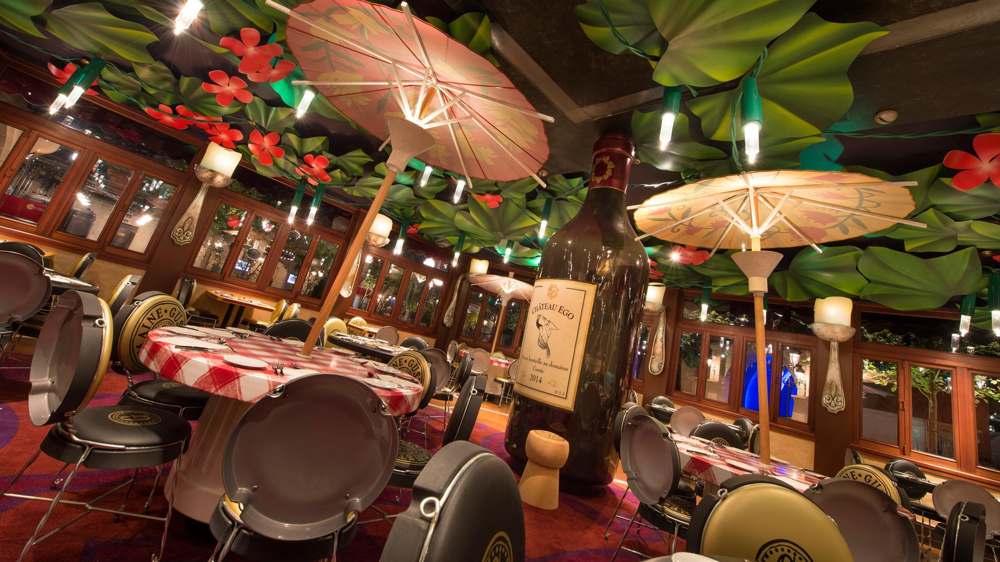
🏰 Disneyland Park
Atracciones · Shows · Estrategia

Tren a vapor panorámico que recorre todo el perímetro del parque con paradas en Main Street, Fantasyland y Discoveryland. Pasa por el Diorama del Gran Cañón.

Una montaña rusa en una mina de oro encantada a través del Viejo Oeste. Curvas cerradas, subidas y bajadas con vista al lago.

La versión europea de la Haunted Mansion. Una mansión encantada con historia de amor trágico única en el mundo. No tan oscura como parece.

Paseo en vapor por el río que rodea Big Thunder Mountain, con vistas al Lejano Oeste y nuevas escenas de animales añadidas en 2026.
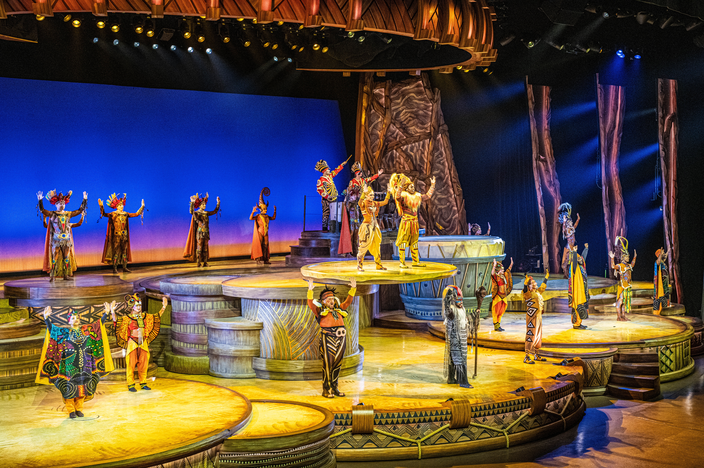
Show musical de ~30 minutos inspirado en El Rey León en uno de los teatros más grandes de Disneyland Paris. Acróbatas, bailarines, cantantes en vivo, tambores africanos y fuego. La música suena en zulú, swahili y francés con la potencia de una versión teatral. Para mí es un imperdible.

Clásico imperdible. Paseo en bote por escenas de piratas. La versión de Paris es la más grande del mundo con una pequeña caída al inicio.

Montaña rusa con loop completo en un templo arqueológico. La única en todo Disney con un loop. Sacudida intensa.

Isla explorable en el corazón de Adventureland con cuevas, puentes colgantes, la Roca del Cráneo y el Tesoro de Davy Jones.

La casa del árbol de la Familia Robinson en Adventureland. Subís por escaleras entre los árboles hasta la cima, con vistas espectaculares al parque.

Paseo a pie por los pasajes de Agrabah con dioramas en miniatura de las escenas más icónicas de Aladdin. Muy detallado y completamente gratuito.

El castillo icónico de Disneyland Paris. Se puede entrar y subir a ver tapices de la historia de La Bella Durmiente. Abajo hay una dragona animatrónica única en todos los Disney del mundo.

Clásico relajante para toda la familia. Paseo en bote por países del mundo representados con muñecos animados. Perfecto para los más chicos.

Vuelo sobre Londres y Nunca Jamás en un barco pirata. Una de las atracciones más mágicas del parque. Siempre tiene cola larguísima.

Paseo tranquilo en bote por miniaturas de cuentos de hadas clásicos: Cenicienta, Blancanieves, Caperucita Roja y más. Perfecto para los más chicos.

Laberinto de setos interactivo ambientado en Alicia en el País de las Maravillas. Lleno de sorpresas, escaleras, toboganes y el Castillo de la Reina de Corazones al final.

Las clásicas tazas giratorias del Sombrerero Loco. Se puede controlar la velocidad de giro desde el centro de cada taza.

Los elefantes voladores más famosos de Disney. Los pasajeros controlan la altura. Imperdible para los más chicos.

El trenito del circo de Dumbo recorre la zona de Fantasyland pasando por Le Pays des Contes de Fées. Vista panorámica del parque.

Dark ride clásico por los bosques y la mina de Blancanieves y los siete enanitos. Versión única de Paris con final feliz.

Dark ride por los momentos clave de Pinocho: la Isla del Placer, el vientre de Monstro y su viaje para convertirse en niño real.

El carrusel medieval de Lancelot, ubicado justo detrás del castillo. Caballos finamente decorados con escenas del rey Arturo.

La montaña rusa más extrema de todos los Disney del mundo. Lanzamiento tipo cañón a 71 km/h, 3 inversiones y recorrido parcialmente al aire libre. Temática Star Wars con nueva iluminación LED 2025.

Juego interactivo en el que el visitante dispara con un láser a blancos para ganar puntos. Divertido para todas las edades.

Simulador espacial con temática Star Wars. Viaje en speeder por distintos destinos del universo Star Wars con efectos 3D y movimiento. Cada viaje es diferente.

Conducí tu propio auto por una autopista del futuro. Clásico de Discoveryland muy querido por los chicos.

Naves espaciales voladoras que se elevan en círculos. Los pasajeros controlan la altura. Inspirada en el sistema solar de Leonardo Da Vinci.

Recorrido a pie por el interior del submarino Nautilus del Capitán Nemo. Animatronics, efectos especiales y atmósfera submarina única. Gratuito, sin fila larga.
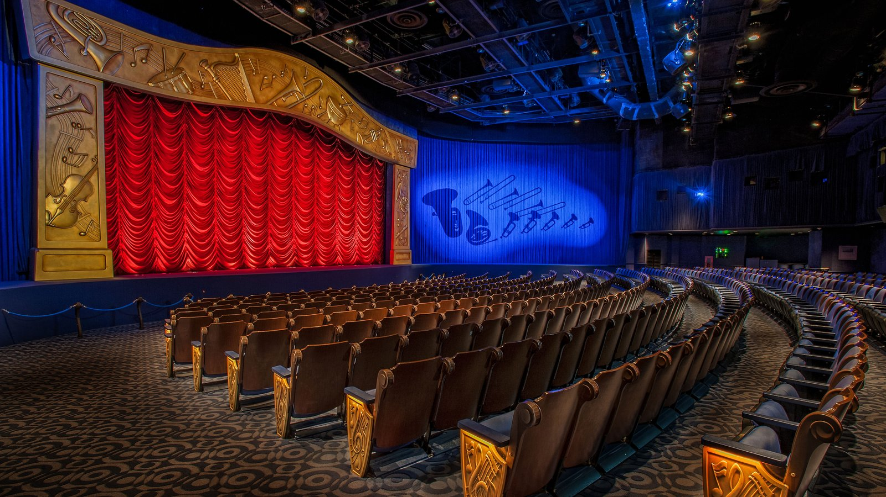
Espectáculo 4D en el Discoveryland Theatre donde Donald viaja por momentos icónicos de pelis Disney (La Sirenita, Aladdin, El Rey León, Peter Pan y Coco) tratando de recuperar la varita mágica de Mickey. Pantalla 3D de las más grandes del mundo, con efectos de agua, viento y aroma. Sala climatizada.
Los horarios aparecen en la app cerca de la fecha de viaje. Mis MUST: el desfile + el cierre nocturno. Llegá 30-40 min antes para conseguir buen lugar en la primera fila.
Disney Tales of Magic ⭐
Espectáculo nocturno de proyecciones, fuegos artificiales y láser sobre el Castillo. El gran cierre del día en Disneyland. Imperdible.
Disney Stars on Parade (Desfile) ⭐
Desfile diurno con todos los personajes principales de Disney. Carrozas temáticas por Main Street U.S.A. Casi siempre a las 16:30 — consultá en la app el día de tu visita.
A Million Splashes of Colour
Parade diurno de alta energía con Mickey, Timon, Joy (Inside Out), Mirabel (Encanto) y más. Música, color y splash de agua por Main Street U.S.A. Volvió al parque del 7-feb al 6-sep 2026.
The Lion King: Rhythms of the Pride Lands ⭐
El show preferido de Sofi — espectáculo musical africano en el teatro de Adventureland. Canciones, danzas y percusión inspiradas en El Rey León. Varias funciones por día.
Mickey et son Orchestre PhilharMagique
Discoveryland Theatre. Show 4D de 12 min donde Donald viaja por escenas de Disney (La Sirenita, Aladdin, El Rey León, Peter Pan, Coco) buscando la varita de Mickey. Sala climatizada — buena pausa con calor o lluvia.
🥐 Check-in
¡La aventura comienza al llegar a tu hotel Disney!
Llegá temprano: aunque tu habitación recién esté disponible a las 15 hs, vas a poder hacer el check-in en el front desk de tu hotel IGUAL. Y ahí mismo te dan los tickets para que ya puedas ingresar a los parques aunque tu habitación no esté lista.
Cómo hacer el check-in: tené a mano tu número de reserva — el que te envié por WhatsApp el día que hicimos la reserva del paquete.
Magic Hours: si te hospedás en un hotel Disney tenés una hora de early access a los parques. ¡Es el destino donde MÁS se aprovecha!
¡No te olvides de la App! Ahí podés ver los horarios de apertura y cierre de los parques, horarios de shows y desfiles.
📲 Magic Pass — tickets virtuales
Los tickets ya no son físicos: ahora son virtuales en la app Disneyland Paris. Cada persona del grupo tiene su propio código QR único — ese es el Magic Pass, y es lo que escanean en los molinetes de entrada a los parques.
El Magic Pass contiene todo: las entradas a los parques, los meal vouchers (si tenés plan de comidas) y el acceso al estacionamiento.
- Disponible desde 7 días antes de tu llegada, directo en la app y también en Apple Wallet.
- Si reservaste con menos de 3 días de anticipación, se activa en la recepción del hotel el día que llegás.
- Podés ir directo a los molinetes de los parques sin pasar antes por el hotel.
✨ Estrategia para maximizar tu early access en Disneyland
Vamos a empezar por Big Thunder Mountain — mi preferida y una de las más demandadas. Seguido de:
- Hyperspace Mountain: ojo, esta es más fuerte que la de Orlando.
Y ya que estamos en esa zona (si ya es el horario de apertura oficial) sumamos: Buzz Lightyear Laser Blast y Star Tours.
- Pirates of the Caribbean: si conocés la de Orlando o California, esta te va a sorprender.
- Indiana Jones and the Temple of Peril: montaña rusa corta e intensa.
- Phantom Manor: es el "Haunted Mansion" de Disneyland Paris.
🏰 Después de la mañana agitada... Fantasyland
Después de esa mañana agitada vamos a encarar Fantasyland. Estas son las atracciones que vas a encontrar:
- Peter Pan's Flight (la más popular de la zona)
- Les Voyages de Pinocchio (Dark Ride por las escenas de la película)
- It's a Small World (dura como 15 minutos — ideal para descansar)
- Dumbo the Flying Elephant
- Mad Hatter's Tea Cups (en criollo: las tazas)
- Alice's Curious Labyrinth (recorrido a pie)
- Le Pays des Contes de Fées: un recorrido en barquito por escenarios minúsculos de pelis de Disney.
🎟️ Tipos de filas
Cuando lleguen a una atracción se van a encontrar con 3 tipos de filas. Saber moverse entre ellas es la diferencia entre hacer 5 atracciones o 12 en un día.
1️⃣ Fila Standby (la normal)
Es la fila gratuita y tradicional. Esperás tu turno. En atracciones top del parque puede ser de 60-120 minutos en horarios pico.
2️⃣ Premier Access ONE 💎
Fila rápida paga que se compra dentro del parque desde la app, atracción por atracción. Las más económicas salen ~€5 por persona, las más demandadas ~€13. Se pueden reservar hasta 12 atracciones por día y máximo 3 veces la misma. Mi favorita para no pagar Ultimate y igual ahorrar tiempo donde más duele.
3️⃣ Single Rider 🔄
Fila alternativa gratis que casi todas las atracciones top tienen. La hacen todos juntos pero a la hora de subir al juego el Cast Member los separa para rellenar los espacios vacíos. Si no les importa no ir al lado, es su mejor aliada.
☕ Desayuno
Siempre es en el hotel. Es buffet. No requiere reserva. Si contrataste el plan de comidas ya lo tendrás pago y sino podrías acercarte a pagarlo allí en el momento.
Con personajes pueden reservar en Plaza Gardens (Disneyland Park).
🍽️ Ver todos los restaurants →
Disneyland Park · Adventure World · Hoteles · Disney Village — todo en una sola pantalla con filtros.
🍬 Snacks & datos útiles
Mickey Beignet ⭐ — probalo sí o sí, es un snack exclusivo de Disneyland Paris. Unos buñuelos con forma de Mickey y azúcar.
Souvenirs: caminá por Main Street hasta el final. A la derecha vas a encontrar un puestito donde venden pochocleras y también champagne (¡el vasito se lo quedan!).
🥂 El brindis viral: comprar champagne acá es un clásico de Instagram porque el vaso te lo quedás de souvenir (sale alrededor de €20) y lo venden en carritos por todo el parque. En Disneyland Park la copa es dorada; en Disney Adventure World es celeste (la del World of Frozen ).
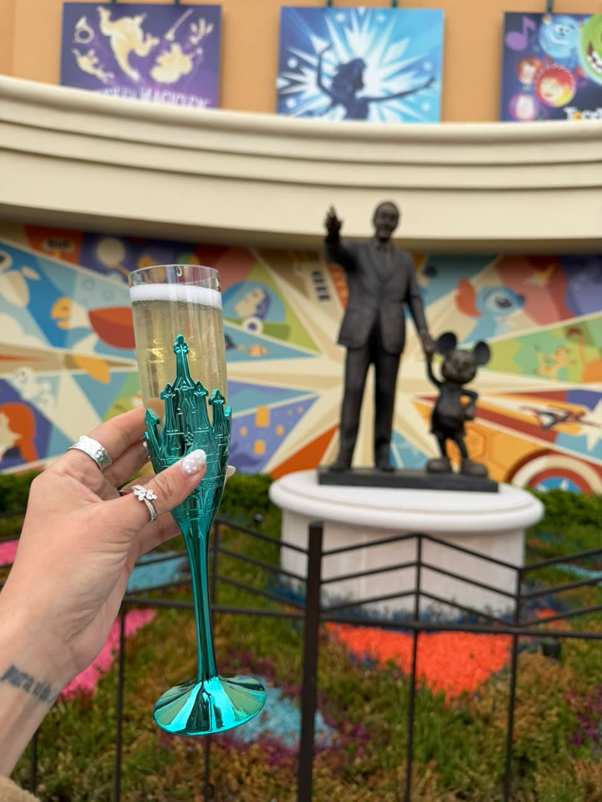
👆 Ojo: esta es la celeste del World of Frozen (Disney Adventure World). Acá en Disneyland Park la copa es dorada.
📏 Atracciones con altura mínima — Disneyland Park
El resto de las atracciones (Pirates, Phantom Manor, Peter Pan, It's a Small World, Dumbo, las tazas, Alice Labyrinth, Le Pays des Contes de Fées, Buzz Lightyear, Orbitron) no tienen altura mínima.
¡Have a magical day! ✨
Escribime por WhatsApp cuantas veces quieras. Preguntame todo — no importa el día, no importa el horario. ¡Siempre a la orden!
🎬 Disney Adventure World
Atracciones · Shows · Estrategia
Antes conocido como Walt Disney Studios Park — renombrado el 29 de marzo de 2026 con la apertura del World of Frozen

Nueva atracción inaugurada el 29 de marzo de 2026 en el World of Frozen. Paseo en barco por el reino de Arendelle con Anna, Elsa, Olaf y los personajes de Frozen.
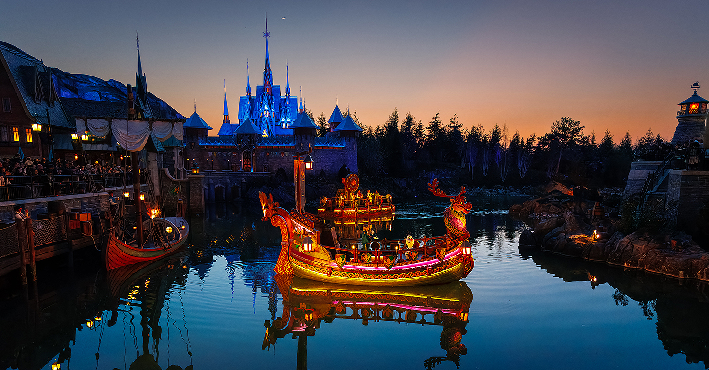
Espectáculo diurno sobre el lago del World of Frozen, el área nueva de Disney Adventure World abierta en marzo 2026. Anna, Elsa, Kristoff, Sven y Olaf cantan los temas de Frozen sobre una plataforma flotante con el castillo y el pueblo de Arendelle de fondo. Varias funciones durante el día.

Montaña rusa de alta velocidad en el Avengers Campus. Giros, inversiones y gran velocidad. Temática Marvel muy bien lograda.

Atracción interactiva donde el visitante usa poderes de Spider-Man para capturar robots. Similar al Toy Story Mania pero con telarañas.

Paseo en el que el visitante se convierte en ratón y recorre el restaurante Gusteau. Exclusivo de Paris. Efecto 4D con olores, proyecciones y movimiento.

Montaña rusa giratoria que recorre el fondo del mar de Buscando a Nemo. Las vagonetas giran aleatoriamente. Muy divertida y adrenalínica.

El perro Slinky de Toy Story te lleva en un giro en espiral. Atracción familiar suave, perfecta para los más chicos.

Torre de caída libre temática de Toy Story. Los soldaditos de Woody hacen descender suavemente a los pasajeros desde lo alto.

El auto RC de Toy Story como atracción tipo péndulo gigante. Va de un lado al otro ganando altura hasta casi 180°. Muy intensa.

Paseo tranquilo por Ruta 66 con los personajes de Cars. Muy disfrutable para los chicos.
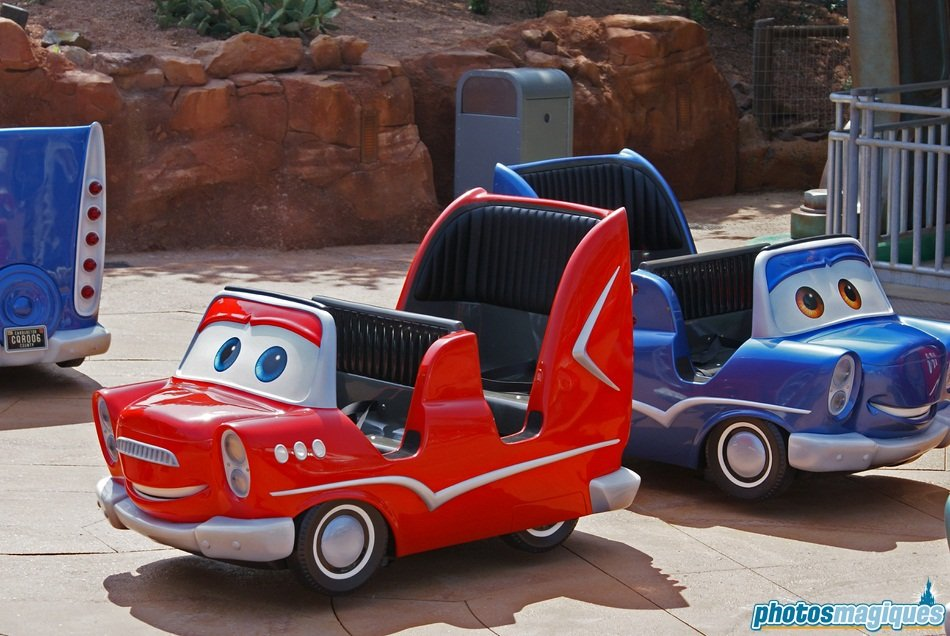
Las tazas versión Cars. Los autos giran en círculos sobre una pista con forma de neumático. Perfecta para los más chicos.
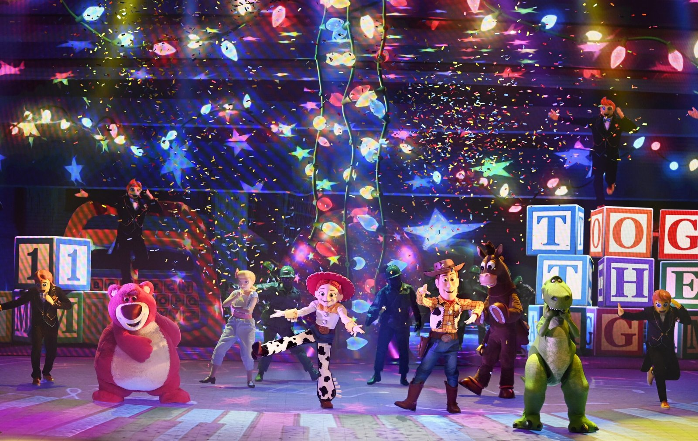
Show musical en vivo en el Studio Theater que celebra los favoritos de Pixar — Toy Story, Monsters Inc., Finding Nemo y más — con sets vibrantes y una canción original. Volvió al parque el 7 de marzo de 2026.

Nueva atracción inaugurada el 29 de marzo de 2026 en Adventure Way. Góndola giratoria inspirada en Rapunzel bajo un cielo de linternas flotantes.

Ascensor de caída libre en un hotel embrujado. Caídas aleatorias que la hacen diferente cada vez. Una de las mejores del parque.
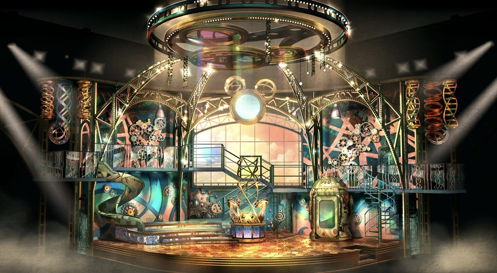
Show interactivo en el Studio D que debutó en febrero de 2026 reemplazando al viejo Disney Junior. Minnie es la directora de la fábrica de sueños y lidera la aventura junto a Donald, Daisy y Chip & Dale. Canciones nuevas, vestuario rediseñado, escenografía con luces vibrantes y momentos para que los nenes participen.
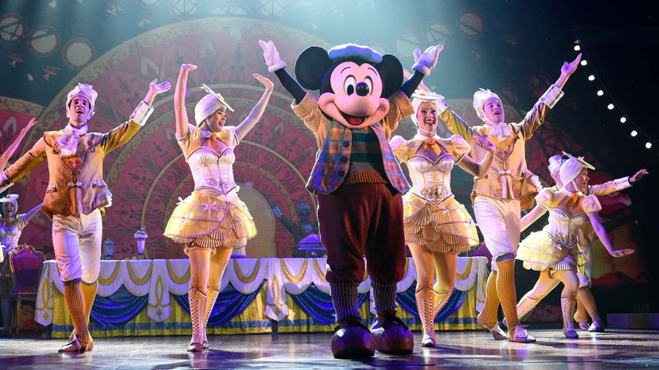
Show estrella del Studio Theater de Disney Adventure World. ~25 minutos donde Mickey aprende magia con el aprendiz de Yensid (el hechicero de Fantasía) y va invocando personajes de Disney en escena: Bella, Aladdin, Rapunzel, Elsa y más. Canciones en vivo, vestuario espectacular y efectos clásicos de teatro. Pensado para toda la familia.
Los horarios aparecen en la app cerca de la fecha de viaje. Mis MUST: el cierre nocturno + los shows en teatro. Llegá 15-20 min antes para conseguir buen lugar.
Disney Cascade of Lights ⭐
El nuevo show de cierre — 16 minutos sobre el lago de Frozen con 379 drones, fuentes de agua, proyecciones, fuego y pirotecnia. Personajes de Moana, Mulan, Hércules, Zootopia, Up y Marvel. El gran cierre del día.
Mickey and the Magician ⭐
Studio Theater. ~25 min de teatro donde Mickey aprende magia con el aprendiz de Yensid e invoca a Bella, Aladdin, Rapunzel, Elsa y más. Canciones en vivo.
TOGETHER: A Pixar Musical Adventure ⭐
Studio Theater. Show musical en vivo que celebra Toy Story, Monsters Inc., Finding Nemo y más Pixar — con sets vibrantes y canción original. Volvió el 7-mar 2026.
Stitch Live!
Show interactivo en tiempo real — Stitch aparece en pantalla y conversa con el público en vivo (cada función es única). Sala estilo centro de control espacial. En francés e inglés.
Minnie's Dream Factory
Studio D. Show interactivo con Minnie, Donald, Daisy y Chip & Dale (debut feb 2026). Ideal para los más chicos.
Animation Academy
World Premiere Plaza. Un animador Disney te enseña paso a paso a dibujar un personaje. Te llevás tu dibujo de recuerdo. ~25 min, ideal pausa entre atracciones.
Heroic Welcome ⭐
~20 min de encuentro con Iron Man, Captain America, Thor y varios héroes según el día. Hosts carismáticos, fotos al final del show.
Avengers Unite!
Stunt show — Taskmaster y una banda de mercenarios infiltran el campus y Black Widow + Black Panther los pelean en los techos del W.E.B.
The Amazing Spider-Man Show
Stunt show en el techo del W.E.B. Workshop — acrobacias, saltos, flips y swinging por telarañas. Varias funciones por día.
Pedestal for Mjolnir Worthiness
Thor y Loki seleccionan un invitado del público para intentar levantar el Mjolnir y demostrar si es "digno". Show breve con humor entre los hermanos.
Dancing with Deadpool
Deadpool juzga el ritmo del público bailando sus canciones favoritas. ⚠️ Solo del 28-mar al 15-jul 2026.
Minnie's Marching Band
Banda marcial de 12 músicos dirigida por Minnie (vestida con uniforme blue/pink/gold y batuta en forma de clave de sol). Recorre Adventure Way varias veces por día. 15 min.
Musical Moment with Rapunzel and Flynn
Adventure Way Gazebo Garden. ~20 min de música del reino de Corona — trío con tambor, flauta y guitarra. Rapunzel se suma a cantar "When Will My Life Begin" y busca a Flynn.
A Celebration in Arendelle ⭐
Arendelle Bay (lago principal). Anna, Elsa, Olaf y Kristoff se reúnen para celebrar las tradiciones del reino. Varias funciones por día.
🎫 Zona VIP para shows y desfiles
Si querés asegurarte un lugar para ver los shows o desfiles cómodamente, se puede comprar Zona VIP desde una semana antes. Sale aprox €25 por persona por show. Consultame y lo gestionamos juntas.
✨ Estrategia para maximizar tu early access en Disney Adventure World
Vamos a arrancar por la joyita del parque:
CRUSH COASTER 🐢
Misma tecnología que Guardianes de la Galaxia en Epcot — montaña rusa con giros.
❄️ Después de Crush... World of Frozen
Después de hacer Crush Coaster (o si se lo quieren saltear) van directo a...
FROZEN EVER AFTER
No solo la atracción es muy bella sino que toda esta land necesita tiempo para recorrerla — de día y de noche.
En la zona del World of Frozen van a encontrar:
- Los shops temáticos (no te pierdas los 2 souvenirs más famosos 👇)
- Encuentros con Anna y Elsa (con fila virtual)
- El nuevo animatronic de Olaf que camina libre y habla (aparece cuando quiere...)
- Show: A Celebration in Arendelle durante el día en el lago principal
- Cierre nocturno: Disney Cascade of Lights sobre la misma fuente
🛍️ Los 2 souvenirs más famosos del World of Frozen
En los shops de la land (sobre todo Fjord View) hay dos souvenirs que son LOS más buscados de la zona:
- 🫙 Tarrito de miniaturas (~€35): agarrás un frasco vacío y lo vas llenando vos de una pared repleta de mini figuritas de los personajes de Frozen (Anna, Elsa, Olaf, Sven, Kristoff, los trolls, Marshmallow y más). Te llevás todas las que te entren en el tarrito — re divertido de armar.
- 💌 Postal para enviar a tu país (~€8): hay 3 versiones para elegir. En la caja te ponen un sello internacional, la escribís ahí mismo y la dejás en el buzón internacional. ¡Le llega a quien quieras, al país que quieras, directo desde el parque!
🎟️ Filas virtuales — para algunos encuentros con personajes
Algunos encuentros con personajes no son fila física: funcionan con fila virtual. Te anotás desde la app oficial de Disneyland Paris y te dan un horario para volver. Por ejemplo: Mickey, Olaf, Stitch, Spider-Man, Anna y Elsa.
- Sí o sí hay que estar dentro del parque para poder anotarse.
- Se habilitan 2 horarios para acceder a las filas: 9:45 y 14:00 hs.
En la app les aparece así 👇
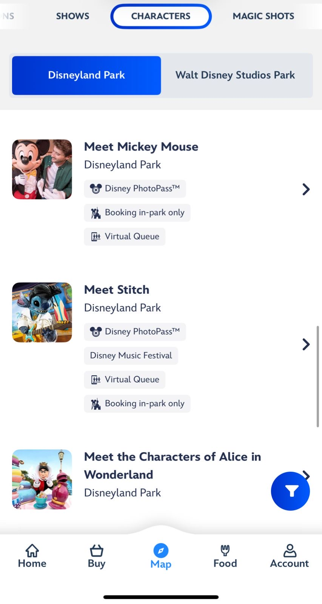
🎯 Sigamos por el resto del parque
- Ratatouille
- Avengers Campus: empezando por la montaña rusa Avengers Assemble: Flight Force (la "Aerosmith" de Disneyland Paris) y después Spider-Man W.E.B. Adventure.
- Tower of Terror
- Zona Toy Story: Slinky Dog Zigzag Spin (para los más chiquitos), Toy Soldiers Parachute Drop y RC Racer.
- Atracciones para los más chiquitos: Cars Quatre Roues Rallye (las tazas versión Cars) y Cars Road Trip (amo este paseo).
🍽️ Ver todos los restaurants →
Adventure World · Disneyland Park · Hoteles · Disney Village — todo en una sola pantalla con filtros.
🥂 El brindis viral de Disneyland Paris
Un clásico de Instagram en los parques: comprar champagne porque ¡el vaso te lo quedás de souvenir! Sale alrededor de €20 y lo venden en carritos por todo el parque.
Acá en Disney Adventure World la copa es celeste (la del World of Frozen). En Disneyland Park es dorada. ¡Buenísimas para la foto!
📏 Atracciones con altura mínima — Disney Adventure World
El resto de las atracciones (Ratatouille, Spider-Man W.E.B. Adventure, Cars Quatre Roues Rallye, Cars Road Trip, Slinky Dog Zigzag Spin, Frozen Ever After) no tienen altura mínima.
¡Have a magical day! ✨
Escribime por WhatsApp cuantas veces quieras. Preguntame todo — no importa el día, no importa el horario. ¡Siempre a la orden!
🍽️ Restaurants
Parques · Hoteles · Disney Village
⭐ marca mis favoritos · Con personajes = vienen a saludar a la mesa
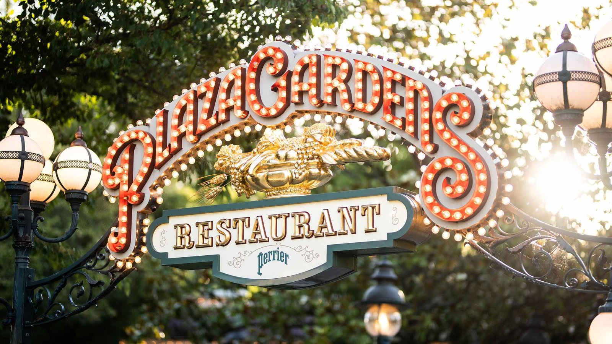
Buffet en un salón estilo invernadero al lado del castillo, sobre Main Street. Mickey, Minnie y amigos pasan mesa por mesa para saludar y sacarse fotos — tanto en desayuno como en cena. Cocina internacional variada. Una de las experiencias más buscadas del parque.
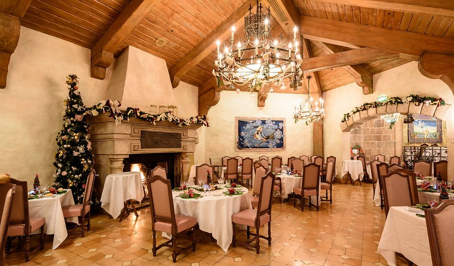
Cena con princesas Disney en una posada medieval ambientada en el cuento de Cenicienta. Las princesas (Cenicienta, Ariel, Bella, Aurora, Rapunzel — rota la lista) pasan mesa por mesa para saludar y sacar fotos. Cocina francesa adaptada para chicos. Imperdible si vas con peques.
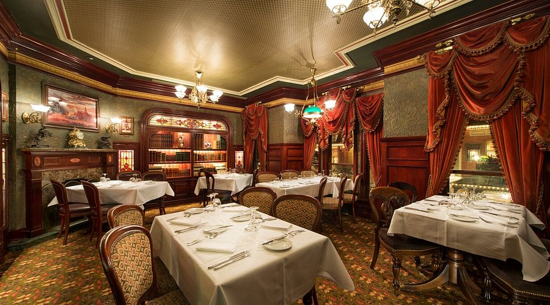
Restaurante temático dedicado a la vida de Walt Disney, sobre Main Street. Cada salón está decorado homenajeando una etapa de su carrera — Kansas City, Hollywood, los parques. Cocina norteamericana fina (steaks, costillas, salmón). Considerado uno de los más especiales y elegantes del parque.
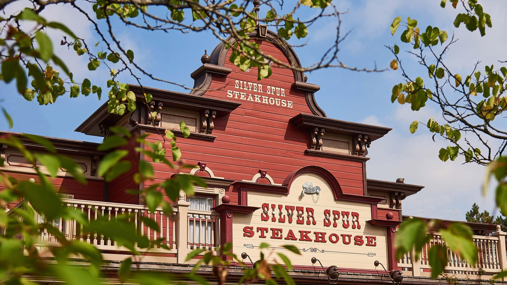
Steakhouse en Frontierland con ambientación de saloon del Far West. Carnes a la parrilla y costillas. Pesado pero rico — ideal para una cena fuerte después del parque.
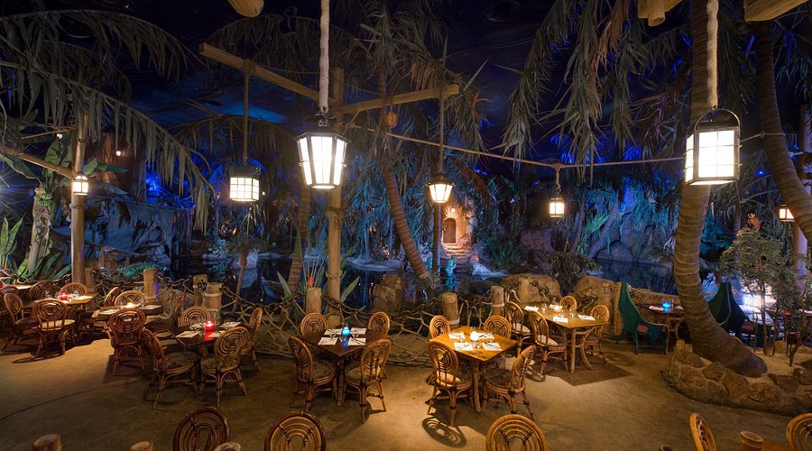
Está literalmente DENTRO de la atracción Pirates of the Caribbean, en Adventureland — comés con vista a los botes que pasan por adentro de la atracción, bajo un cielo estrellado tropical y con ambientación de taberna pirata caribeña. Cocina del Caribe con toques cajun: pescados, mariscos y carnes especiadas, más opciones simples para los chicos. Es de las experiencias más mágicas de Disneyland Paris.
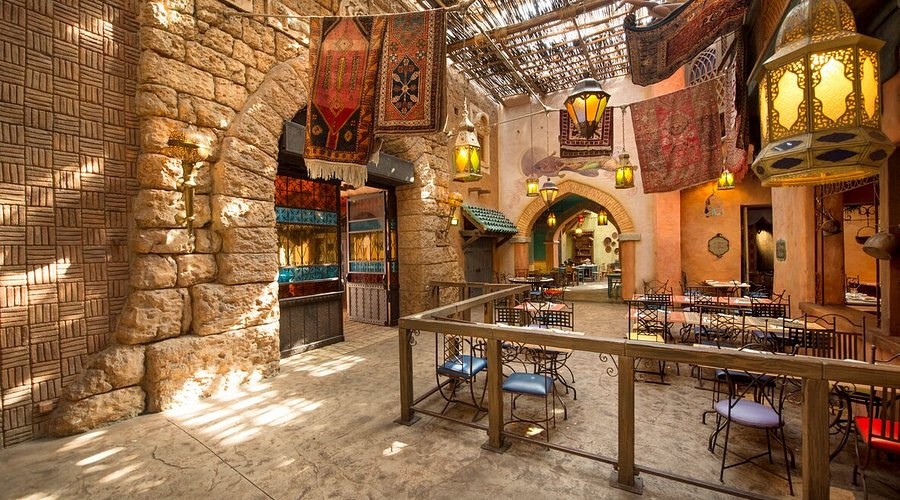
Buffet en Adventureland con sabores del norte de África y Medio Oriente — cuscús, tagines, falafels, kebabs. Ambientación inspirada en Aladdin. Buena opción si querés probar algo distinto al menú americano del resto del parque.
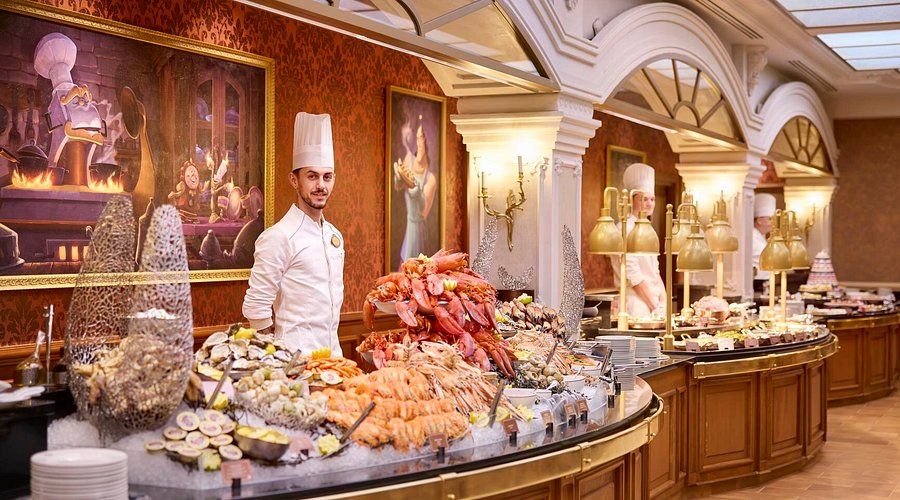
Buffet en el castillo de la Bella Durmiente, en Fantasyland. Ambientación de banquete medieval majestuoso con vitrales, candelabros y techos altísimos. Cocina internacional. Una opción imponente para comer adentro del castillo más icónico del parque.
El restaurante temático de Ratatouille — y uno de los más mágicos de todo Disney. Toda la decoración (sillas en forma de tapa de botella, mesas armadas con platos enormes, vajilla XL) está sobredimensionada para que te sientas del tamaño de Rémy. Cocina francesa simple y rica: confit de canard, steak frites, ratatouille, postres clásicos. Imperdible.
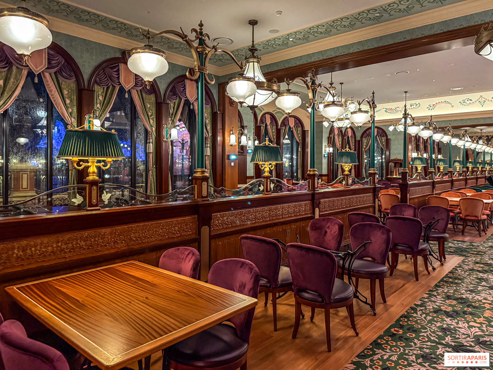
Restaurante panorámico dentro del World of Frozen, abierto desde marzo 2026 con la apertura de la nueva área. Cocina nórdica inspirada en Arendelle, con vista al castillo y al pueblo de Frozen. Opción nueva y muy buscada.
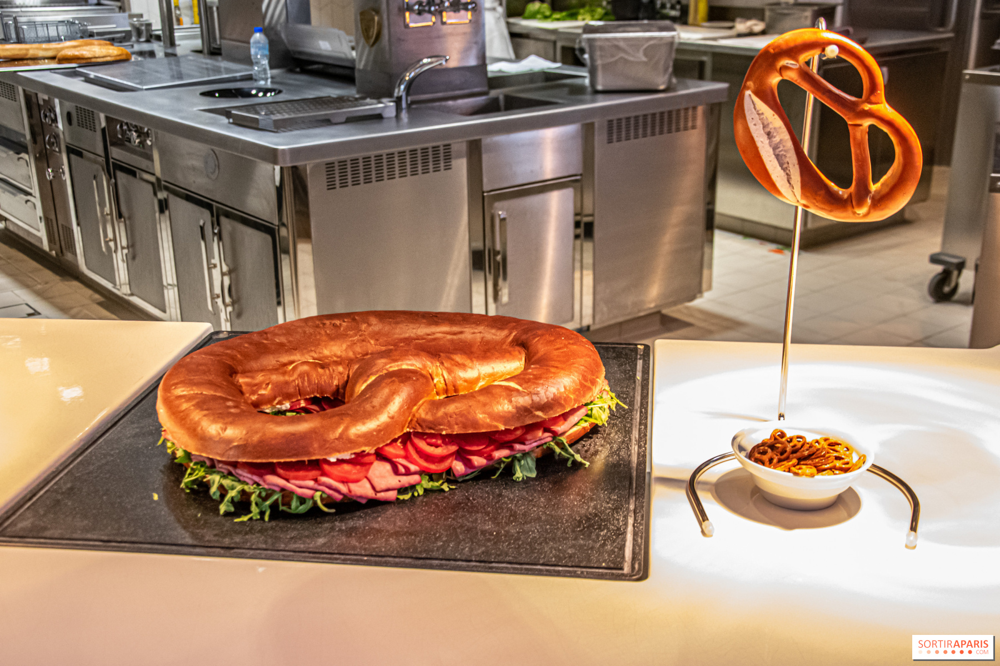
Buffet del Avengers Campus inspirado en los experimentos de Ant-Man con las Pym Particles: porciones gigantes y mini conviven en el mismo buffet — sándwiches XXL, ñoquis del tamaño de pelotas de tenis, miniaturas de postres. Muy divertido visualmente y rico para chicos y grandes.
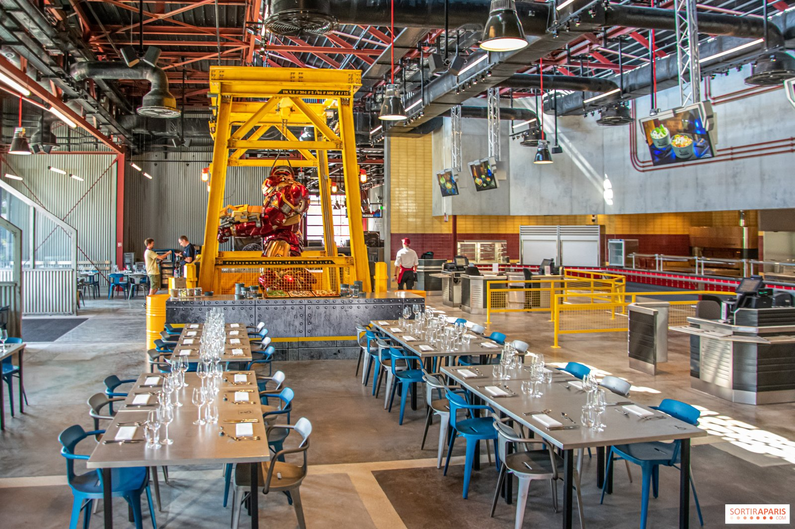
Pizzería italiana en el Avengers Campus, ambientada como la fábrica industrial de Tony Stark. Pizza al horno, pasta y postres italianos. Buena opción más casual dentro del área Marvel.
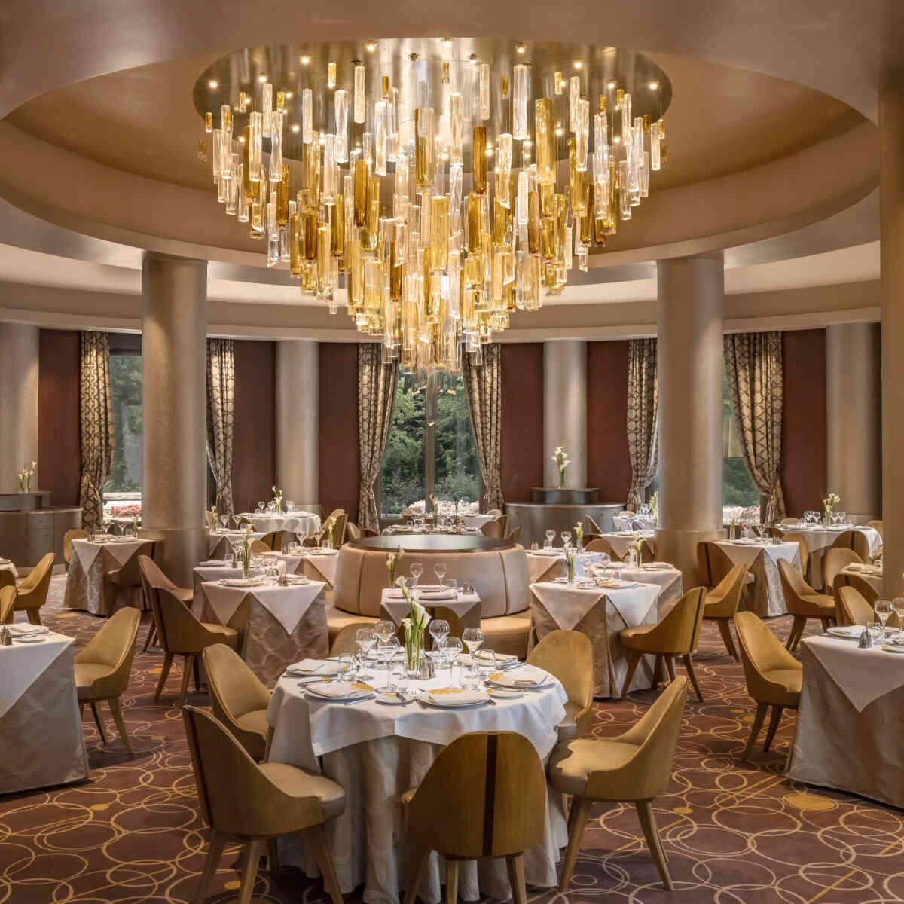
Restaurante gourmet del Hotel New York – The Art of Marvel. Ambientación elegante neoyorquina con piezas de arte Marvel originales en las paredes. Cocina italo-americana refinada (pastas frescas, carnes, pescados). Solo cena. La opción más sofisticada de los hoteles Disney.
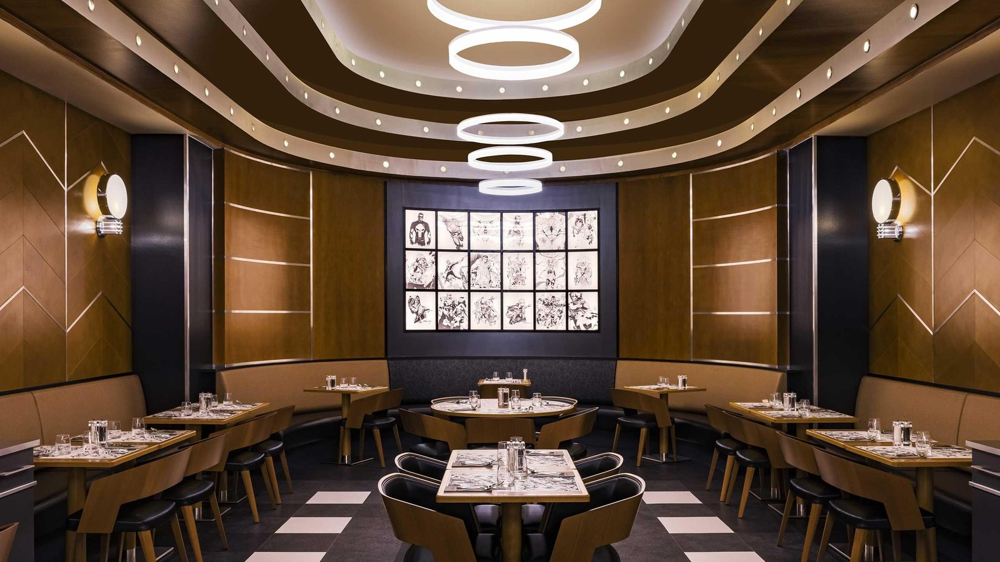
Buffet del Hotel New York – The Art of Marvel, abierto para desayuno y cena. Ambientación moderna inspirada en el downtown neoyorquino con detalles de arte Marvel. Buffet internacional variado con estaciones en vivo. Opción cómoda y rica para huéspedes del hotel.
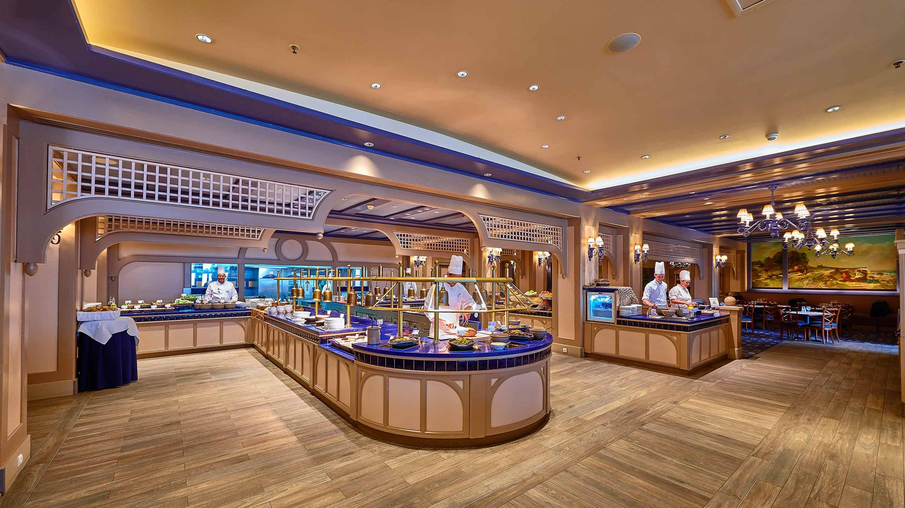
Buffet del Newport Bay Club, con temática de Nueva Inglaterra costera. Especialidad en mariscos y langosta, con vistas al "lago" del hotel. Ambientación náutica relajada en azul y blanco. Desayuno y cena.
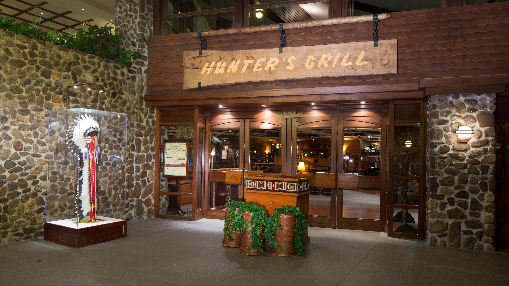
Buffet del Sequoia Lodge con ambientación de cabaña de montaña norteamericana — madera, piedra y chimenea. Especialidad en asados a la parrilla, carnes y pescados ahumados. Cocina rústica abundante. Mi recomendado si te hospedás en el Sequoia.
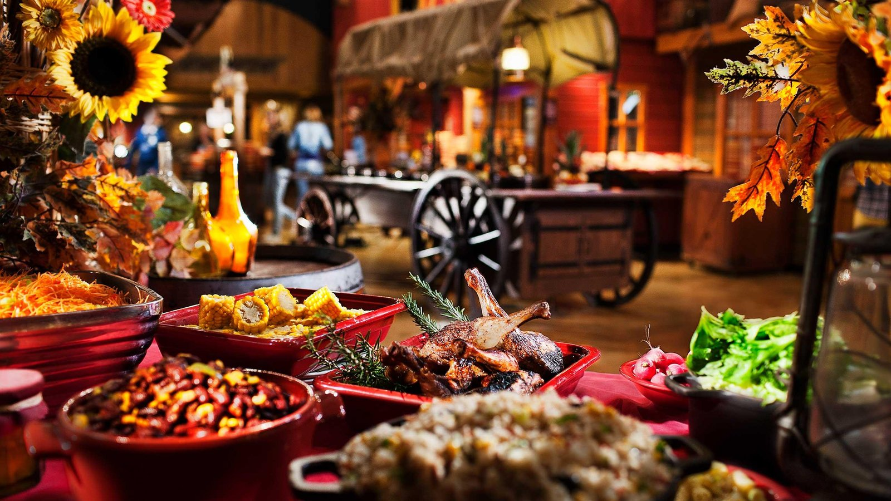
Buffet del Hotel Cheyenne con temática de Lejano Oeste — el comedor está ambientado como un pueblo del Wild West con carromatos. Cocina americana casual: BBQ, hamburguesas, ensaladas. Ideal con peques.
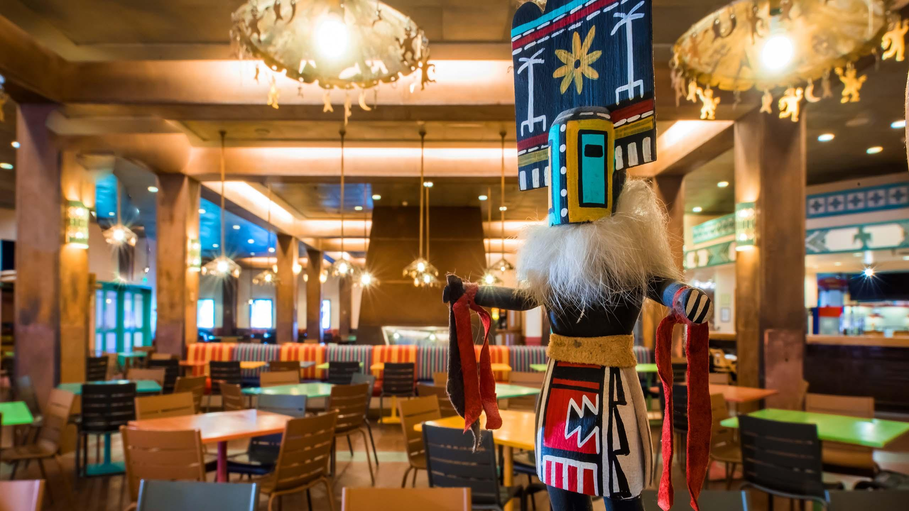
Buffet del Hotel Santa Fe, con temática Cars (Radiator Springs). Cocina tex-mex casual y abundante: tacos, fajitas, burritos, nachos. La opción más económica entre los hoteles Disney y muy bien valorada por familias.
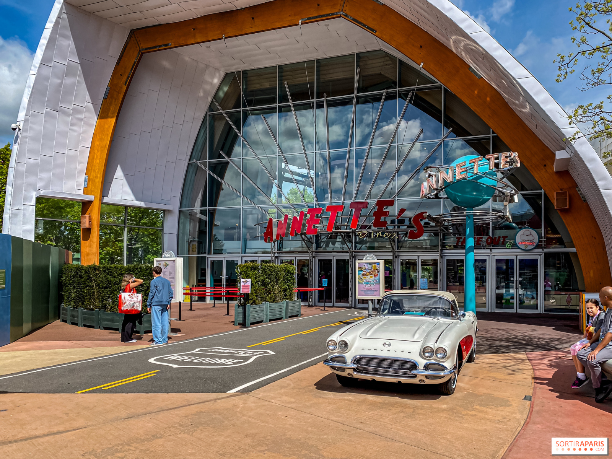
Diner americano años 50 en pleno Disney Village — neones, jukebox, camareras en patines. Hamburguesas, milkshakes, hot dogs y postres XL. Entra en el plan de comidas pero no requiere reserva. Plan B perfecto si no conseguiste mesa en los parques.
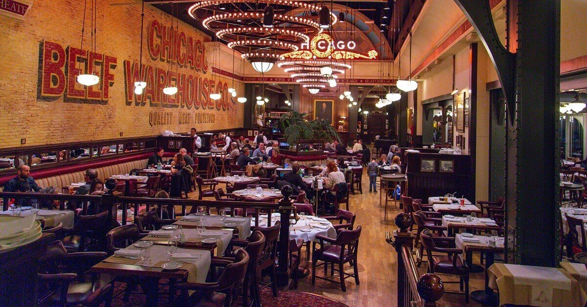
Steakhouse premium en Disney Village con ambientación industrial inspirada en los mataderos de Chicago de principios del 1900. Carnes de calidad a la parrilla, ribeye, costillas, vinos. Buena opción para una cena fuerte fuera de los parques.
¿Te ayudo a reservar?
Las reservas se hacen desde la app oficial de Disneyland Paris. Si tenés dudas sobre cuál elegir según las edades de tus peques, escribime — armamos juntos el cronograma.
🇫🇷 Guía Francia
Paris día a día · Transporte · Tips
🚇 Metro de Paris
La red de metro cubre prácticamente toda la ciudad con 16 líneas. Tomar el metro es la forma más práctica de moverse por Paris. Opera de 5:30 a 1:00 (viernes y sábados hasta las 2:15).
🎫 Ticket Metro-Train-RER (billete individual)
Válido para un solo viaje en metro y en el tren RER en toda la región Île-de-France (zonas 1 a 5, excepto aeropuertos), autobuses, tranvías y funicular de Montmartre. Se compra en las máquinas de autoservicio dentro de las estaciones, con tarjeta o efectivo, o cargándolo en la app Île-de-France Mobilités.
Precios 2026: El billete individual cuesta 2,55€. También podés comprar un pack de 10 billetes por 17,50€.
Niños: menores de 4 años viajan gratis. Los chicos de 4 a 9 años tienen un pack de 10 reducido a mitad de precio (aprox 8,75€).
💳 Tarjeta Navigo Easy
Podés adquirir la tarjeta Navigo Easy en los mostradores de las estaciones de metro directamente con un empleado. Podés usarla para viajar en el metro, así como en autobuses regulares y trenes de RER.
Precios: Cuesta 2€ y viene vacía. Podés recargarla en el propio mostrador o en las máquinas de autoservicio. El valor de los billetes insertados en la Navigo es el mismo que el billete individual normal. La ventaja es que no corrés el riesgo de perder los billetes en tu bolso, ni tenés que dudar si ese billete se usó o no — es simplemente una cuestión de comodidad. Además, con la eliminación del papel en 2026, es la opción más recomendada.
🗓️ Navigo Découverte (pase semanal)
Pases semanales o mensuales válidos para uso ilimitado en cualquier transporte público de Paris. Podés adquirirlos en el mostrador de cualquier estación autorizada y es necesario presentar una foto 3x4 para pegarla en la tarjeta, por lo tanto la tarjeta es de uso personal.
El problema del Navigo semanal es que la semana siempre comienza el lunes y termina el domingo, es decir, si comenzás a usar tu tarjeta el lunes o el miércoles, expirará el domingo de todos modos. Por lo tanto, la tarjeta no compensa si llegás a Paris al final de la semana, ya que tendrías que comprar una nueva tarjeta el lunes.
Precios 2026: La tarjeta cuesta 5€ y viene vacía. La recarga del pase semanal para las zonas 1 a 5 (incluyendo Disneyland, aeropuertos y Versalles) cuesta 30,60€. En total, son 35,60€ para usarla libremente durante una semana en Paris.
🗺️ Paris Visite
Es un pase individual e ilimitado para cualquier transporte público de Paris. Podés adquirirlos en las estaciones de metro, RER o en las oficinas de información turística de Paris. En 2026 existe una sola versión que cubre todas las zonas (1 a 5), incluyendo aeropuertos, Versalles y Disneyland:
- 1 día: 30,60€ · 2 días: 45,40€ · 3 días: 63,80€ · 5 días: 78,00€
- Niños de 4 a 9 años: 50% de descuento en todos los casos.
🚆 RER a Disneyland y Versalles
Disneyland: Tomar el RER A dirección "Marne-la-Vallée/Chessy". Aproximadamente 40-50 minutos desde el centro. La estación queda a metros de las puertas del parque.
Versalles: Tomar el RER C dirección "Versailles-Château-Rive Gauche". Bajarse en la estación Gare de Versailles Chateau Rive Gauche. Al salir, cruzar la calle y ir hacia la derecha — el palacio queda a metros.
🚕 Taxi / Uber / Bolt
Uber y Bolt funcionan muy bien en Paris. Para grupos puede ser más conveniente que el metro. Uber a Disneyland desde el centro sale aproximadamente €50-70 según el tráfico.
Pont Bir-Hakeim
Todo el día · Gratuito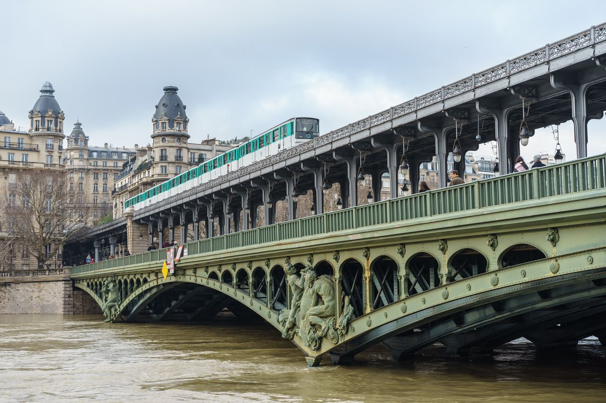
Inaugurado en 1905 y diseñado por Jean Camille Formigé, este puente de dos niveles es una obra maestra del hierro y la arquitectura Belle Époque. El nivel superior lo atraviesa la línea 6 del metro, y el inferior es para peatones y autos.
Su nombre rinde homenaje a la Batalla de Bir Hakeim (Libia, 1942), donde fuerzas francesas libres resistieron durante 15 días a las tropas de Rommel.
🎬 En la pantalla grande: la escena más icónica de "Inception" (2010) de Christopher Nolan — donde Leonardo DiCaprio y Elliot Page doblan Paris sobre sí misma — se filmó en este puente. También aparece en "El último tango en Paris" (1972) y en "Misión Imposible: Fallout".
Trocadéro
Todo el día · Gratuito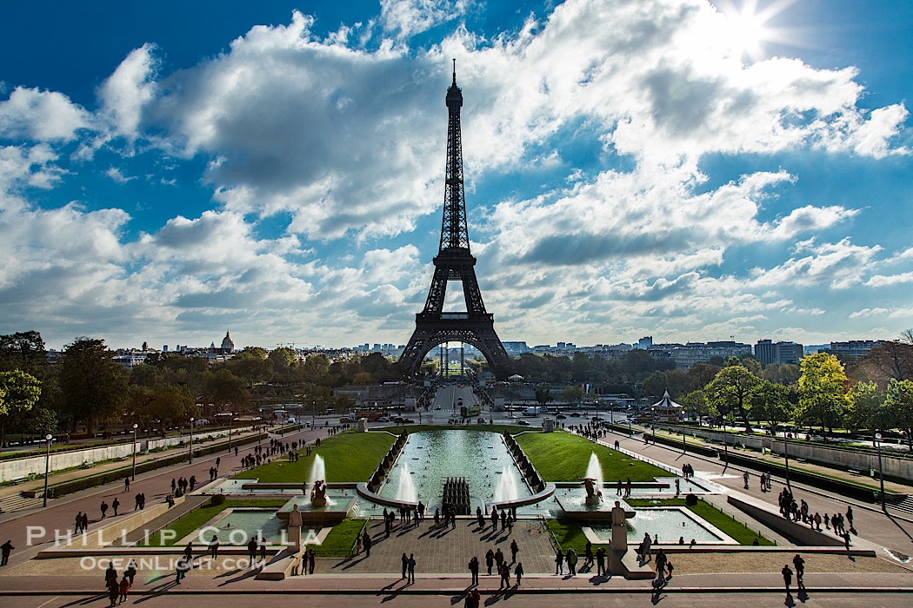
La Place du Trocadéro y el imponente Palais de Chaillot fueron construidos para la Exposición Universal de 1937. Desde sus terrazas tenés la vista frontal más famosa de la Torre Eiffel — justo al otro lado del Sena.
El Palais de Chaillot alberga cuatro museos (Arquitectura, Marina, Hombre y Teatro Nacional) y sus fuentes dan un espectáculo visual único. Desde aquí se tomó la famosa foto de Hitler frente a la Torre Eiffel en 1940.
🎬 En la pantalla grande: escenarios de "Medianoche en Paris" de Woody Allen, "Sex and the City 2", "The Devil Wears Prada" y el icónico cierre de "Nikita" de Luc Besson. También fue locación de varias películas de James Bond.
Torre Eiffel
9:30–23:00 (verano hasta medianoche)
La Dame de Fer (La Dama de Hierro), apodada así por los locales. Diseñada por Gustave Eiffel para la Exposición Universal de 1889 —en el centenario de la Revolución Francesa— fue la estructura más alta del mundo durante 41 años hasta el Chrysler Building de Nueva York (1930). Tiene 330 metros y fue la primera estructura en superar los 200 y 300 metros de altura.
Curiosidad: iba a ser desmantelada después de 20 años, pero se salvó porque servía como antena de radio. Gustave Eiffel tenía un apartamento privado en la cima donde recibía invitados como Thomas Edison. Hoy se puede visitar reconstruido.
Las 3 plantas:
- 1ª Planta (57 m): tiendas, restaurantes y la exposición permanente sobre la historia de la Torre
- 2ª Planta (115 m): mejor vista panorámica y el restaurante Jules Verne (3 estrellas Michelin, reserva con meses)
- 3ª Planta — Cima (276 m): solo en ascensor panorámico. Bar de champagne y reconstrucción del apartamento de Eiffel
🎬 En la pantalla grande: Ratatouille de Pixar (2007) la muestra constantemente. Anastasia (1997) de Don Bluth la convierte en el cierre mágico con el "Paris Holds the Key". También aparece en "An American in Paris" (1951), "Mission Impossible" y prácticamente cualquier film ambientado en Paris.
Precios 2026: desde €14,80 (2° piso) hasta €36,70 (cima) para adultos. Menores de 4 años gratis. Cierra el 14 de julio.
Champ de Mars
Todo el día · Gratuito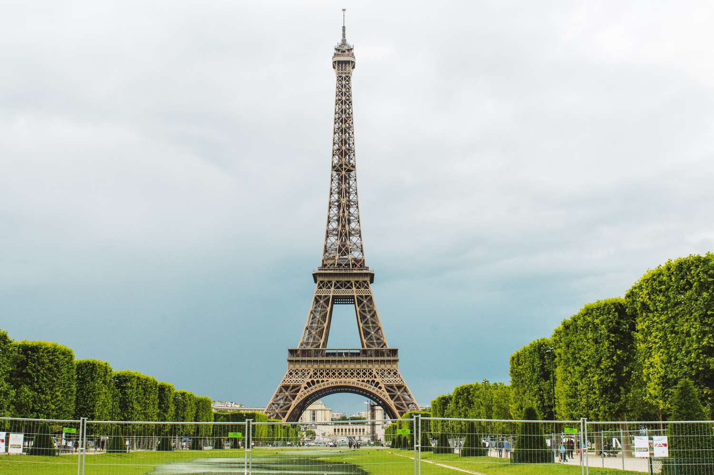
Una explanada verde de más de 24 hectáreas a los pies de la Torre Eiffel. Su nombre viene de Marte, dios romano de la guerra, porque fue durante siglos el campo de entrenamiento militar de la Escuela Militar de Paris — el lugar donde Napoleón Bonaparte recibió su formación.
Aquí se celebraron las grandes Exposiciones Universales del siglo XIX (incluida la de 1889 que dio a luz a la Torre) y eventos revolucionarios como la Fiesta de la Federación en 1790.
🎬 En la pantalla grande: el final de "Medianoche en Paris" de Woody Allen se filma en este parque. También aparece en "Ratatouille" y en casi toda peli romántica de Paris.
Palais de Tokyo
Mar–Dom 12:00–0:00 · Cerrado lunes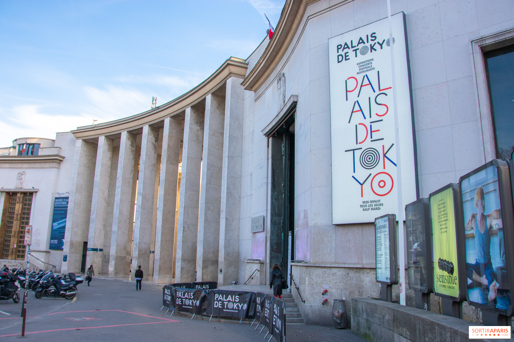
Construido para la Exposición Internacional de 1937, este edificio Art Déco es desde 2002 uno de los centros de arte contemporáneo más grandes de Europa. A diferencia de los museos clásicos, no tiene colección permanente — solo exhibiciones temporales, instalaciones inmersivas y performances.
Su horario extendido hasta medianoche lo hace único: es el museo que cierra más tarde de Paris. Dentro funciona Monsieur Bleu, uno de los restaurantes con mejor vista al Sena y la Torre Eiffel (reserva obligatoria para cenar).
Precio: €12 adultos. Gratuito menores de 18.
Arco de Triunfo
10:00–22:30 (invierno hasta 22:00)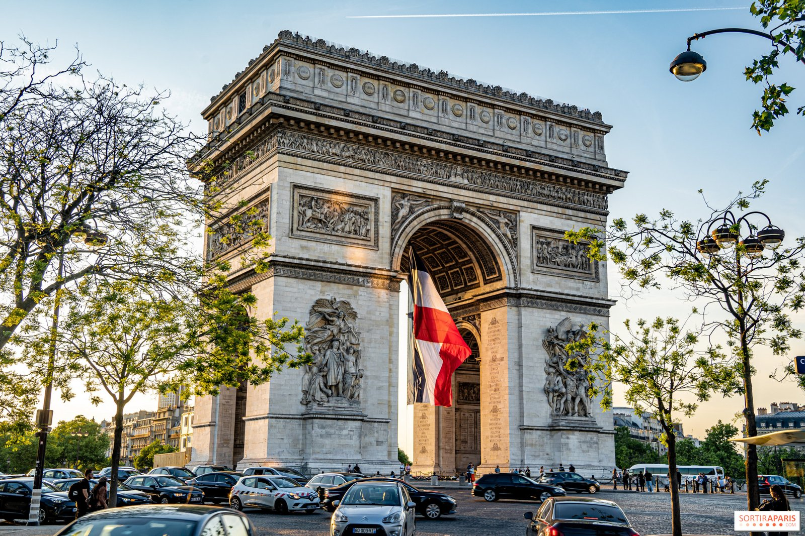
Encargado por Napoleón Bonaparte en 1806 tras su victoria en la batalla de Austerlitz, e inspirado en el Arco de Tito de la antigua Roma. Tardó 30 años en completarse (1806–1836) — Napoleón nunca llegó a verlo terminado; pasó por debajo en su ataúd en 1840.
Mide 50 m de alto y 45 de ancho. En su base está la Tumba del Soldado Desconocido (desde 1920), con una llama eterna que se enciende todos los días a las 18:30 en ceremonia militar. En los pilares están grabados los nombres de 660 generales franceses y 128 batallas napoleónicas.
Desde la terraza (284 escalones) se tiene una vista única de las 12 avenidas que irradian desde la Place Charles de Gaulle formando una estrella —por eso se llama "L'Étoile".
🎬 En la pantalla grande: aparece en "Funny Face" con Audrey Hepburn (1957), "Ratatouille", "Midnight in Paris" y el cierre del Tour de France cada julio.
Precio: €16 adultos. Gratuito menores de 18 y europeos menores de 26.
Champs Élysées
Todo el día · Gratuito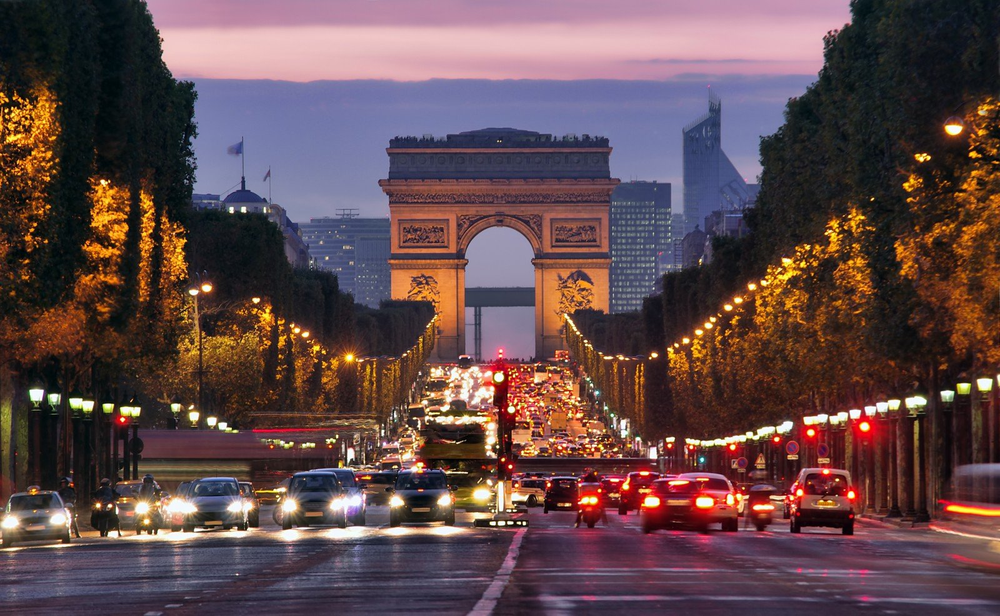
La avenida más famosa del mundo. Su nombre viene de los "Campos Elíseos" de la mitología griega — el paraíso donde descansaban los héroes. Fue diseñada por André Le Nôtre (el mismo de los jardines de Versalles) en el siglo XVII como extensión del Jardín de las Tullerías.
Tiene unos 2 km de largo y 70 m de ancho, y conecta la Place de la Concorde (donde fue guillotinada María Antonieta en 1793) con el Arco de Triunfo. El Tour de France termina aquí cada julio, y el 14 de julio se hace el gran desfile militar.
A lo largo encontrás tiendas de lujo (Louis Vuitton, Cartier, Dior), flagship stores (Disney Store, Sephora gigante, Nike), cines históricos, el Grand Palais y el Petit Palais.
🎬 En la pantalla grande: "Funny Face" (1957) con Audrey Hepburn bailando en los Campos Elíseos, y la película animada Ratatouille los muestra desde el aire varias veces.
Juego de luces nocturno
Cada hora en punto hasta las 23:00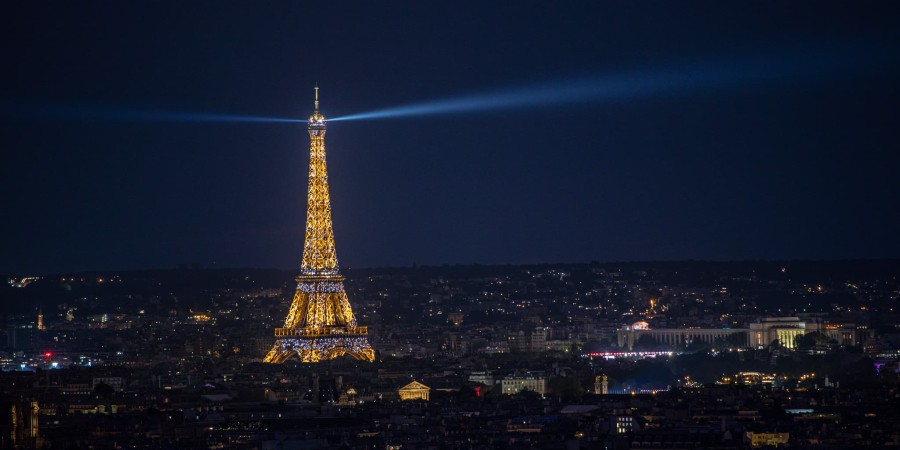
Desde 1985 la Torre Eiffel tiene iluminación dorada permanente al caer la noche. Pero en el año 2000, para celebrar el cambio de milenio, se agregó un segundo espectáculo: 20.000 bombillas blancas que titilan durante 5 minutos al inicio de cada hora, desde el anochecer hasta las 23:00.
La iluminación fue tan exitosa que la dejaron permanente. Creada por Pierre Bideau, es hoy un símbolo propio de Paris.
🕐 ¿A qué hora empieza a titilar? Depende de cuándo anochece:
- Verano (jun–ago): primera titilada a las 22:00
- Primavera / otoño (mar–may y sep–oct): 20:00 o 21:00
- Invierno (nov–feb): 18:00 (el sol se pone muy temprano)
La última titilada es siempre a las 23:00. Después la Torre sigue iluminada en dorado hasta las 23:45, cuando se apaga por completo.
Jardín de las Tullerías
7:00–21:00 · Gratuito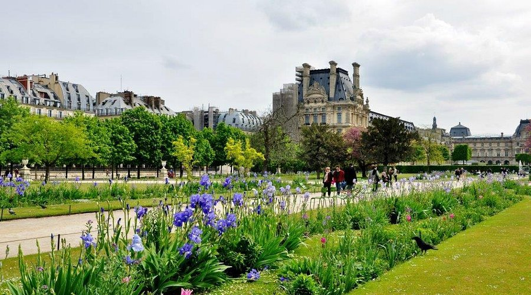
Creados en 1564 por Catalina de Médici como jardines del Palacio de las Tullerías. Un siglo después, André Le Nôtre —el mismo arquitecto de los jardines de Versalles— los rediseñó con senderos simétricos, fuentes y parterres geométricos que se convirtieron en modelo del jardín francés clásico.
El Palacio de las Tullerías ya no existe: fue incendiado por la Comuna de Paris en 1871 y sus ruinas finalmente demolidas. Hoy dentro del jardín están el Musée de l'Orangerie (con los Nenúfares de Monet) y el Jeu de Paume (fotografía contemporánea).
🎬 En la pantalla grande: varias escenas de "Medianoche en Paris" de Woody Allen, "Marie Antoinette" de Sofia Coppola, y "Charade" con Audrey Hepburn y Cary Grant (1963).
Palais Royal
Exterior y arcadas todo el día · Gratuito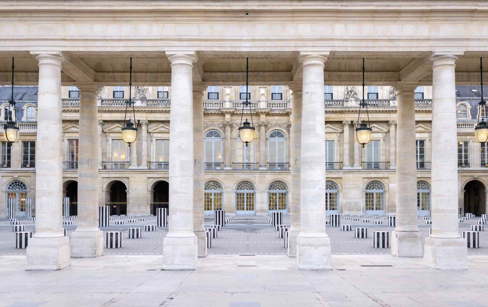
Construido en 1633 para el Cardenal Richelieu (el mismo villano histórico de Los Tres Mosqueteros de Dumas), fue luego residencia del joven Luis XIV antes de mudarse al Louvre. Sirvió como residencia real para varias generaciones de reyes.
Un dato histórico fascinante: el 12 de julio de 1789, justo al lado de este palacio, Camille Desmoulins se paró sobre una mesa y dio el discurso que encendió la Revolución Francesa — dos días antes de la Toma de la Bastilla.
Hoy es un importante centro cultural: alrededor funcionan la Comédie Française, el Ministerio de Cultura y boutiques exclusivas. Los alrededores son conocidos por sus tiendas de alta costura, joyerías y restaurantes.
🎬 En la pantalla grande: "The Devil Wears Prada", "Midnight in Paris", y locación favorita de fashion films y editoriales de moda.
Jardín del Palais Royal
7:30–22:30 · Gratuito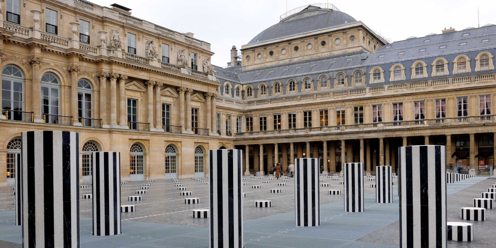
La fachada del palacio cuenta con una serie de arcadas que albergan tiendas y galerías comerciales. En el centro del complejo se encuentra un gran jardín con fuentes circulares y esculturas, donde podés disfrutar de un paseo tranquilo o sentarte en uno de los bancos a apreciar la vista.
El lado sur del jardín alberga las famosas Colonnes de Buren: 260 columnas de mármol rayadas blanco y negro de distintas alturas, instaladas por Daniel Buren en 1986. Fue una obra polémica por el contraste con la arquitectura clásica del palacio — hoy es de las más fotografiadas de Paris, objetivo favorito de fotógrafos e influencers.
Museo del Louvre
9:00–18:00 · Mié y Vie hasta 21:00 · Cerrado martes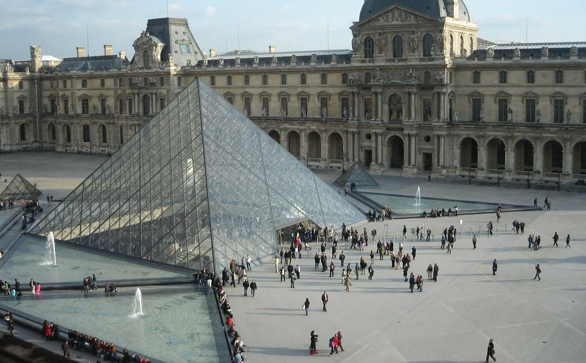
El museo más visitado del mundo (9 millones al año). Comenzó como un castillo medieval en 1190 bajo Felipe II Augusto, se transformó en palacio renacentista con Francisco I (que trajo a Leonardo Da Vinci a Francia con la Mona Lisa bajo el brazo), y se convirtió en museo público en 1793 durante la Revolución — los bienes de la realeza ahora pertenecían al pueblo.
La Pirámide de Vidrio de I.M. Pei (1989) fue polémica cuando se construyó pero hoy es tan icónica como el resto del edificio. Alberga 35.000 obras expuestas (de 380.000 en total): la Mona Lisa de Leonardo, la Venus de Milo, la Victoria de Samotracia, el Código de Hammurabi, y "La Libertad guiando al pueblo" de Delacroix.
🎬 En la pantalla grande: icónica escena inicial de "El Código Da Vinci" (Dan Brown → película con Tom Hanks). También "Funny Face" con Audrey Hepburn, "Bande à Part" de Godard con la famosa carrera de 9:43 minutos cruzando todo el museo, y muchas más.
Precios 2026: €22 (residentes europeos) / €32 (resto). Gratuito menores de 18 y europeos menores de 26. También gratuito el 14 de julio y el primer viernes de mes a partir de las 18:00 (excepto julio y agosto). Incluso con entrada gratuita hay que reservar franja horaria online.
Pont des Arts
Todo el día · Gratuito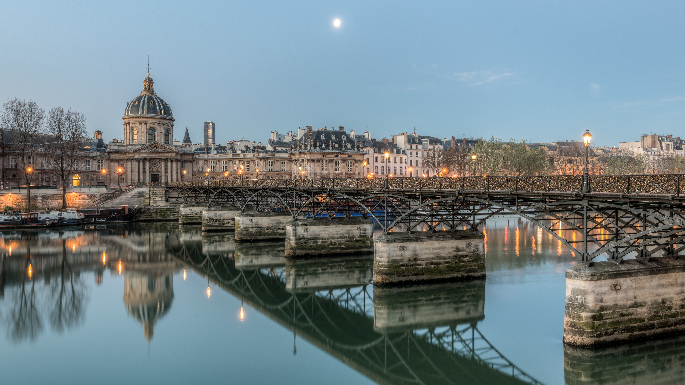
Justo al salir del Louvre por la salida del Sena, cruzás este puente peatonal — el más romántico de Paris. Inaugurado en 1804 por orden de Napoleón, fue el primer puente de hierro de la ciudad. Une el Louvre con el Instituto de Francia.
Durante años se hizo famoso por los "candados del amor" que las parejas colgaban de sus rejas — llegaron a pesar más de 45 toneladas y las autoridades tuvieron que retirarlos en 2015 para proteger la estructura.
🎬 En la pantalla grande: escena icónica de "Amélie" (2001) cuando hace saltar piedras en el Sena. También aparece en "Midnight in Paris" y "Now You See Me 2".
Iglesia de Saint-Eustache
Lun–Vie 9:30–19:00 · Entrada gratuita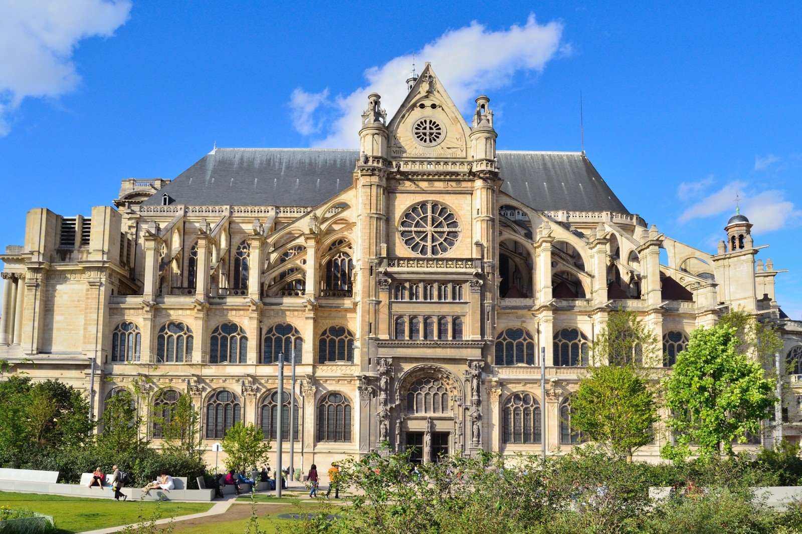
Construida entre 1532 y 1632 (restaurada en 1840), Saint-Eustache es una de las iglesias más importantes de Paris — una mezcla única de arquitectura gótica tardía por fuera y renacentista por dentro. Su nombre rinde homenaje a Santo Eustaquio, un general romano convertido al cristianismo.
Acá pasaron cosas grandes: Luis XIV recibió su primera comunión en 1649, Mozart eligió este lugar para el funeral de su madre en 1778, y Molière fue bautizado aquí. También está enterrado Jean-Baptiste Colbert, el ministro de finanzas de Luis XIV.
Tiene uno de los órganos más grandes de Francia (8.000 tubos). Queda en el corazón del antiguo mercado de Paris, Les Halles, hoy una zona de compras y restaurantes.
Ópera Garnier
10:00–17:00 · Entrada paga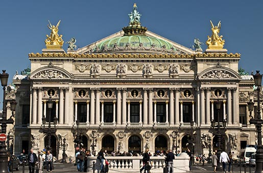
Obra maestra del estilo Segundo Imperio, encargada por Napoleón III como parte de la gran renovación de Paris de Haussmann. Construida entre 1861 y 1875 por Charles Garnier, quien ganó el concurso compitiendo con más de 170 arquitectos — tenía 35 años y era un desconocido cuando ganó.
Su interior es espectacular: Gran Escalera de mármol, el majestuoso Gran Foyer dorado, y un techo pintado por Marc Chagall en 1964 con escenas de óperas famosas. El salón principal tiene la araña de cristal más grande del mundo (6 toneladas).
🎬 En la pantalla grande: inspiración directa de "El Fantasma de la Ópera" de Gastón Leroux (1910). El libro habla de un "lago subterráneo" — y sí, existe de verdad: la napa freática inundó la cimentación durante la construcción, así que lo usan como reservorio. Los bomberos de Paris practican natación ahí. Adaptaciones famosas: la película de 2004 con Gerard Butler y el musical de Andrew Lloyd Webber.
Precio: €15 visita libre / €22 con audioguía. Gratuito menores de 12.
Galeries Lafayette
Lun–Sáb 9:30–20:30 · Entrada gratuita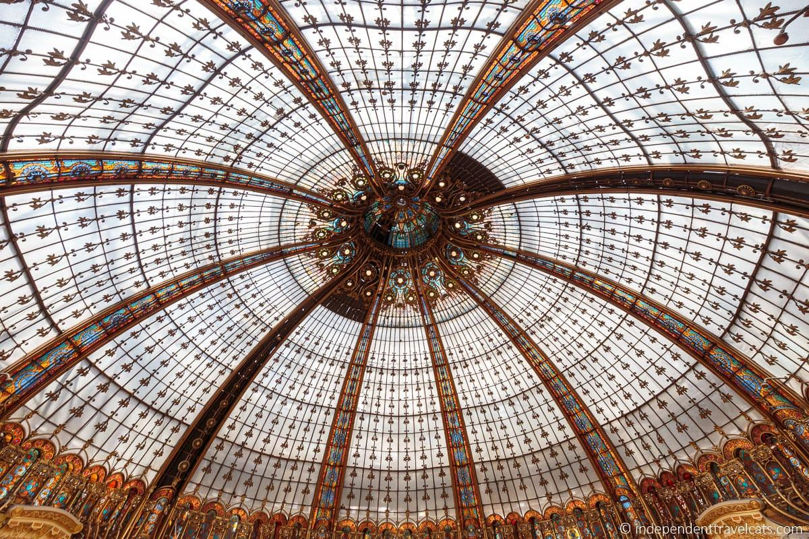
Fundada en 1894 por Théophile Bader, Galeries Lafayette es una de las tiendas por departamentos más famosas del mundo. Su joya es la cúpula de vitrales Art Nouveau de 33 metros de altura, terminada en 1912, que se extiende sobre 7 pisos de tiendas de las marcas más top del mundo.
Gratuita para entrar (aun sin comprar nada). Tiene desde las marcas más caras hasta un piso con marcas accesibles y promos. Su terraza panorámica en la cima es gratuita y ofrece una de las mejores vistas de Paris — con la Torre Eiffel, el Sacré-Cœur y la Ópera a la vista.
🎬 En la pantalla grande: aparece en "Paris, Je t'aime" y "Midnight in Paris". Sede de desfiles de moda históricos.
Place Vendôme
Todo el día · Gratuito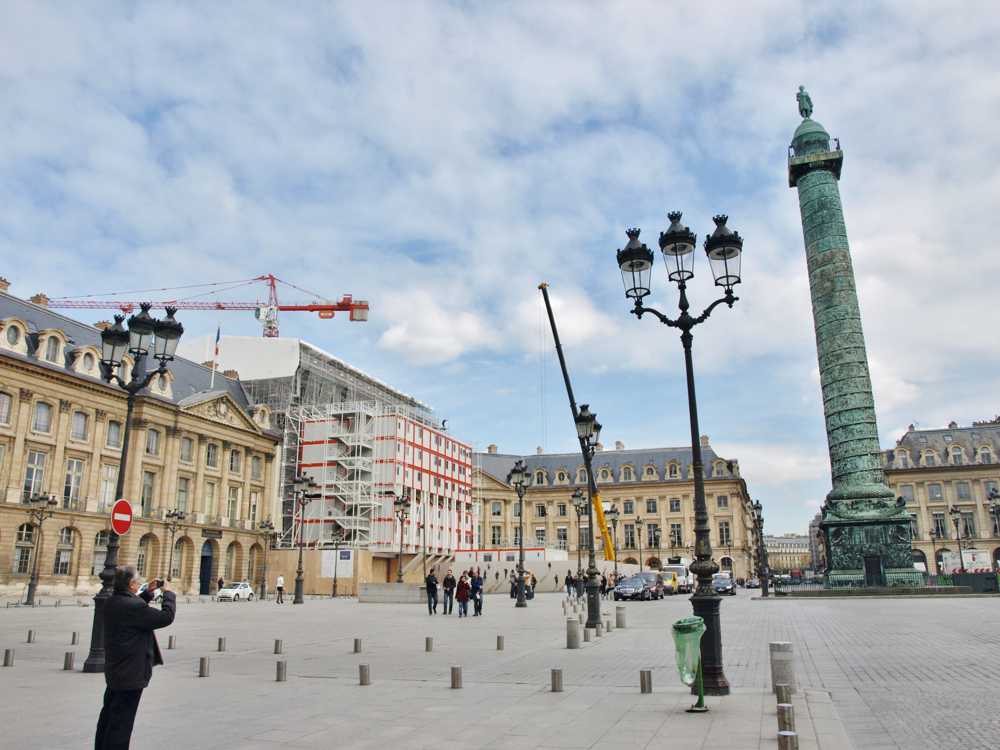
Diseñada por Jules Hardouin-Mansart en 1699 (el mismo arquitecto de Versalles y Los Inválidos), es una de las plazas más elegantes del mundo. Originalmente construida en honor a Luis XIV, hoy es sinónimo de lujo: acá están las joyerías más caras del planeta — Cartier, Van Cleef & Arpels, Chaumet, Chanel Joyería, Boucheron.
En el centro: la Columna Vendôme (44 m de altura), erigida por Napoleón en 1810 y hecha con el bronce de 1.200 cañones rusos y austríacos capturados en la Batalla de Austerlitz (1805). En la cima hay una estatua de Napoleón vestido de César. La columna fue derribada por la Comuna de Paris en 1871 y reconstruida poco después.
En el n°15 está el Hôtel Ritz: donde vivió Coco Chanel por 37 años (en la Suite que hoy lleva su nombre), donde Ernest Hemingway "liberó" el bar durante la Segunda Guerra, y desde donde salió Lady Di la noche de su fatal accidente en 1997.
🎬 En la pantalla grande: "Coco Avant Chanel" con Audrey Tautou, escenas de "Midnight in Paris", "Marie Antoinette" y muchas más.
Muro del "Te Amo"
Todo el día · Gratuito
Una obra de arte público compuesta por 612 baldosas azules de lava esmaltada con la frase "Te amo" escrita 311 veces en 250 idiomas. Fue creada por el artista Frédéric Baron —que pasó años recolectando "te amo" de gente de todo el mundo— y la calígrafa Claire Kito, e inaugurada el 14 de febrero del 2000 (Día de San Valentín, obvio).
Las pequeñas manchas rojas simbolizan pedazos de un corazón roto: la idea es que el "Te amo" los puede volver a unir. Es uno de los lugares más románticos de Paris.
Basílica del Sacré-Cœur
6:00–22:30 · Entrada gratuita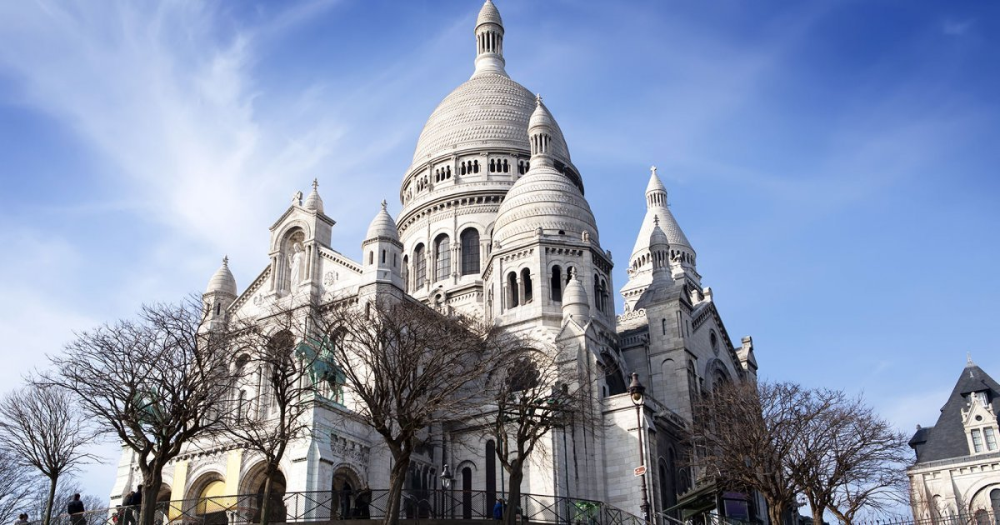
La Basílica del Sagrado Corazón es el segundo punto más alto de Paris después de la Torre Eiffel. Fue construida como acto de penitencia nacional tras la humillante derrota francesa en la guerra franco-prusiana (1870) y los horrores de la Comuna de Paris (1871) — buscaba bendecir la ciudad herida.
Su construcción comenzó en 1875 y llevó 40 años completarla (consagrada en 1919). Su estilo romano-bizantino es inusual en Francia, donde predomina el gótico. La cúpula de 80 m ofrece una vista panorámica de 360º de Paris. Dentro alberga el mosaico más grande de Francia (475 m², de Luc-Olivier Merson) y una tradición de oración perpetua 24/7 que no se ha interrumpido desde 1885.
Su piedra travertino de Château-Landon libera calcita cuando llueve — por eso Sacré-Cœur siempre se ve blanca, incluso con el paso del tiempo.
🎬 En la pantalla grande: escena icónica de "Amélie" (2001), "Medianoche en Paris" y "El Jorobado de Notre Dame" de 1997 tiene algunas panorámicas inspiradas en este tipo de arquitectura blanca en altura.
Place du Tertre
Todo el día · Gratuito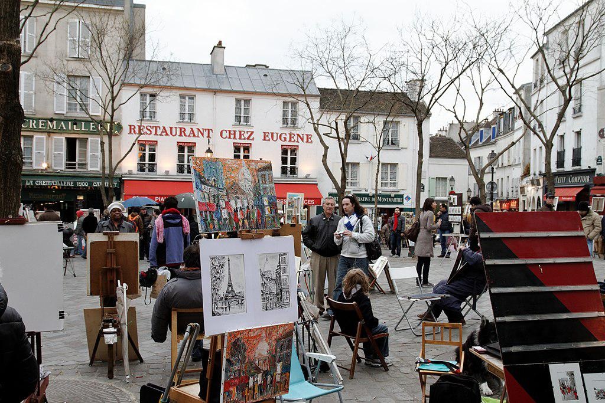
Fue el centro del antiguo pueblo de Montmartre antes de que Paris lo absorbiera en 1860. A principios del siglo XX fue refugio de los artistas que cambiaron el arte moderno: Picasso, Van Gogh, Utrillo, Modigliani, Toulouse-Lautrec, Renoir, Dalí — todos pasaron por acá.
Hoy los 140 artistas que trabajan en la plaza forman un gremio regulado (hay lista de espera para conseguir un puesto). Son pintores, caricaturistas y retratistas que mantienen viva la tradición bohemia del barrio.
🎬 En la pantalla grande: aparece en "Amélie", en biopics de Van Gogh y en decenas de películas románticas ambientadas en Paris.
Le Moulin de la Galette
Hoy funciona como restaurante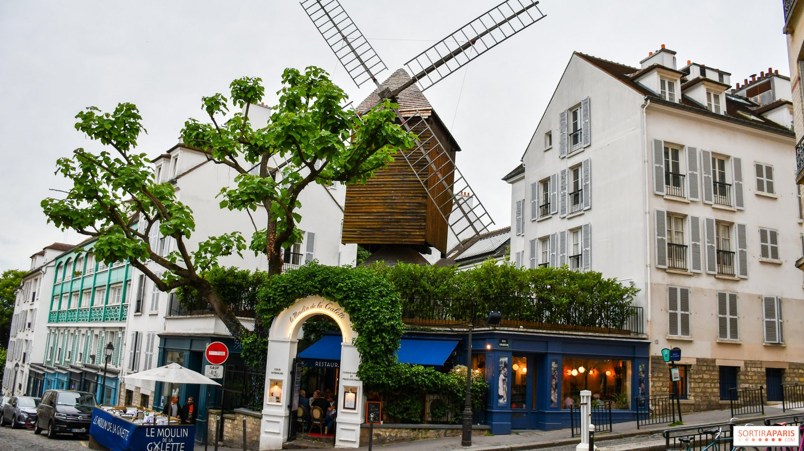
Uno de los últimos 30 molinos de viento que cubrían la colina de Montmartre en el siglo XIX (cuando el barrio era zona agrícola, no parte de Paris). En 1830 se convirtió en un cabaret popular donde el pueblo bailaba y tomaba galettes (tortitas) los domingos.
Mundialmente famoso por ser el tema de la icónica obra "Baile en el Moulin de la Galette" de Renoir (1876), una de las piezas más importantes del impresionismo francés — hoy exhibida en el Musée d'Orsay. También lo pintaron Van Gogh y Toulouse-Lautrec, capturando la vida de la Belle Époque.
Hoy funciona como restaurante/brasserie tradicional con las aspas del molino aún girando.
Rue Lepic
Todo el día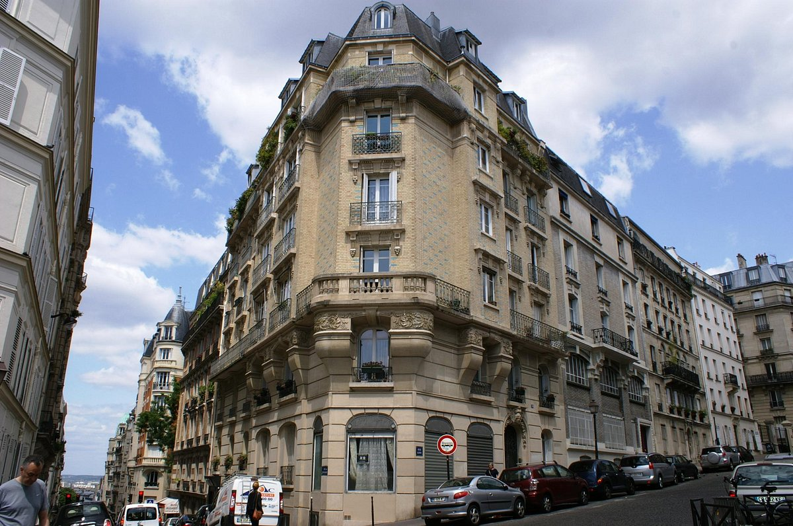
Una de las calles más encantadoras de Montmartre, llena de tiendas, cafés y restaurantes con arquitectura típica parisina. Paseá por ella disfrutando cada rincón.
En el n°54 se encuentra el edificio donde vivió Van Gogh con su hermano Theo entre 1886 y 1888.
También fue escenario de varias escenas de la película "El fabuloso destino de Amélie Poulain" — el almacén Collignon donde Amélie hacía las compras está justo en esta calle.
Café des Deux Moulins
7:00–2:00 · Todos los días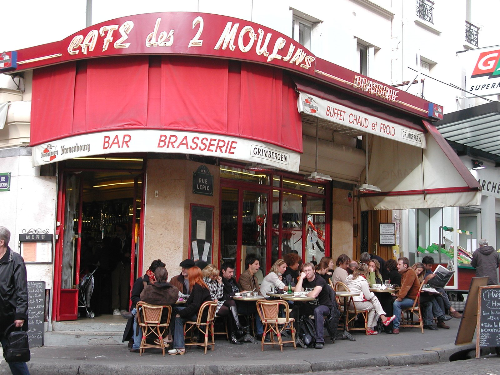
Un bistró parisino tradicional que se volvió leyenda por ser la locación principal de "El fabuloso destino de Amélie Poulain" (Jean-Pierre Jeunet, 2001). Ahí trabajaba Amélie (Audrey Tautou) como camarera, y ahí transcurre gran parte de la película.
Su nombre ("Café de los Dos Molinos") hace referencia a los dos molinos icónicos del barrio: el Moulin Rouge (a 100 metros) y el Moulin de la Galette. Tras el éxito de la película, el café conservó parte de la decoración original del film (fotos, el cartel de tabac, etc).
Sirve comidas tradicionales parisinas a precios razonables — no es solo turístico, los locales también van.
Moulin Rouge
Show desde €115 · Exterior gratis
Inaugurado el 6 de octubre de 1889 por Joseph Oller y Charles Zidler, es el cabaret más famoso del mundo. Fue la cuna del Can-Can moderno y puso de moda una vida nocturna escandalosa para su época: espectáculos donde las bailarinas mostraban las piernas, cosa impensada en la rígida sociedad parisina.
Su primera gran estrella fue La Goulue, y fue Henri de Toulouse-Lautrec quien inmortalizó al cabaret en sus legendarios carteles —hoy reconocidos como una de las obras fundacionales del arte publicitario moderno. Sufrió un incendio total en 1915 y fue reconstruido manteniendo el estilo.
🎬 En la pantalla grande: el musical "Moulin Rouge!" (2001) de Baz Luhrmann con Nicole Kidman y Ewan McGregor lo convirtió en ícono pop global. También es inspiración de "Burlesque" (2010) con Cher y Christina Aguilera. Hay además un musical de Broadway basado en la película.
Sainte-Chapelle
9:00–19:00 (abr–sep) · 9:00–17:00 (oct–mar)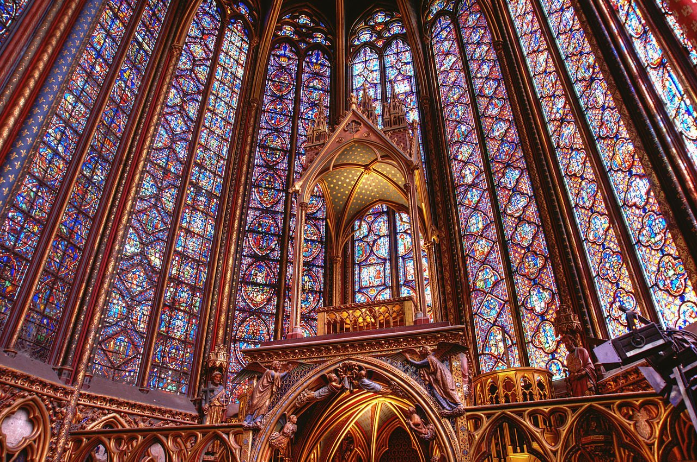
Capilla gótica construida entre 1241 y 1248 por orden del rey Luis IX (San Luis) — en apenas 7 años, un récord para la época. Se construyó para albergar las reliquias más sagradas de la cristiandad: la Corona de Espinas de Cristo (hoy preservada en Notre Dame), un fragmento de la Vera Cruz y el Santo Clavo.
Dato brutal: Luis IX le compró la Corona al emperador bizantino Balduino II por 135.000 libras de oro — tres veces lo que costó construir la capilla entera (40.000). La visitaba era una manifestación política: demostraba que el rey de Francia era protector de la cristiandad.
Su planta alta es la joya: 15 ventanales de 15 metros cuentan 1.113 escenas bíblicas en 600 m² de vitrales (dos tercios originales del siglo XIII). La luz filtrando a través del vidrio crea un efecto indescriptible — por algo la llaman "joya de la arquitectura gótica".
🎬 En la pantalla grande: mencionada en "El Código Da Vinci" y aparece en varias películas sobre la Edad Media francesa.
Precio: desde €13. Gratuito menores de 18 y europeos menores de 26. Reservar franja horaria online incluso con entrada gratuita.
Catedral de Notre Dame
Lun–Vie 7:50–19:00 · GratisUna de las catedrales góticas más hermosas e icónicas del mundo. Su construcción demoró más de 180 años (1163–1345). Acá se coronó Napoleón Bonaparte como emperador en 1804, se beatificó a Juana de Arco en 1909, y fue donde los parisinos celebraron la Liberación de Paris en 1944.
La salvó un libro. A principios del siglo XIX estaba tan deteriorada que iban a demolerla. Entonces Víctor Hugo publicó "Nuestra Señora de Paris" (1831) y la novela causó tal conmoción nacional que el gobierno la restauró con Viollet-le-Duc, quien agregó las icónicas gárgolas y la aguja — esa que cayó en el incendio. Sin el libro, no habría catedral.
🏰 ¡Para Disnerds! Notre Dame es escenario de "El Jorobado de Notre Dame" (Disney, 1996) — la segunda adaptación de la novela de Hugo después de la de 1939 con Charles Laughton. En la película animada, las gárgolas amigas de Quasimodo se llaman Victor, Hugo y Laverne — directo homenaje al autor. La escena "Heaven's Light / Hellfire" transcurre en las torres que ahora podés visitar.
El incendio del 15 de abril de 2019 destruyó la aguja y gran parte del techo. Tras 5 años de restauración, Notre Dame reabrió en diciembre de 2024 con el interior completamente renovado. La aguja fue reconstruida idéntica a la original de Viollet-le-Duc.
🎬 En la pantalla grande: además del Disney, aparece en "Before Sunset" (2004) de Richard Linklater, "Medianoche en Paris" y muchas más.
Torres: reabrieron en septiembre 2025 con recorrido renovado. 424 escalones hasta los 69m. Precio: €16. Solo venta online. Gratuito menores de 18 y europeos menores de 26.
Île Saint-Louis
Todo el día · GratuitoLa isla hermana de la Île de la Cité (la de Notre Dame). Más pequeña, tranquila y con arquitectura intacta del siglo XVII: hôtels particuliers, balcones de hierro forjado y calles empedradas. Acá vivió Charles Baudelaire cuando escribió "Las flores del mal".
Su joya culinaria: Berthillon, fundada en 1954 por Raymond Berthillon — considerada por muchos la mejor heladería del mundo. Sabores míticos: chocolate amargo, violeta, manzana verde, castaña.
🎬 En la pantalla grande: escenas de "Medianoche en Paris" y "Amélie" transcurren bordeando el Sena desde esta isla.
Panteón
10:00–18:30 · Entrada pagaOriginalmente una iglesia que Luis XV prometió construir si se recuperaba de una grave enfermedad (1744). Se terminó en 1790 — y fue justo entonces cuando la Revolución Francesa la secularizó y la convirtió en mausoleo de los grandes hombres de la Patria. La frase "Aux Grands Hommes La Patrie Reconnaissante" sigue grabada en la fachada.
En la cripta descansan: Voltaire, Rousseau, Víctor Hugo, Émile Zola, Alexandre Dumas, Marie Curie (primera mujer inhumada por sus propios méritos, 1995), Jean Moulin (héroe de la Resistencia). Cada incorporación es un evento nacional.
Dato imperdible: aquí Léon Foucault demostró públicamente en 1851 que la Tierra gira con su famoso péndulo — el mismo que hoy cuelga de la cúpula y sigue oscilando visiblemente.
La fachada está inspirada en el Panteón de Roma. La cúpula (83 m) ofrece vista panorámica de Paris — fue el primer mirador alto de la ciudad.
Precio: €13 adultos. Gratuito menores de 18 y europeos menores de 26.
Catacumbas de Paris
Entrada paga · Reservar onlineUna red subterránea de 200 km de antiguas canteras de piedra caliza —las mismas con las que se construyó Notre Dame, el Louvre y media Paris—. A fines del siglo XVIII los cementerios urbanos estaban colapsados y contaminaban la ciudad; se trasladaron los restos a las canteras abandonadas y así nacieron las Catacumbas.
Contienen los restos de 6 millones de personas — incluyendo víctimas de la peste negra medieval y de los guillotinados de la Revolución Francesa (Robespierre entre ellos). Oficialmente abrieron al público en 1809.
La visita baja 130 escalones (20 metros bajo tierra) y recorre 1,5 km de galerías con paredes forradas de huesos — eso es solo el 0,5% del total. El resto está sellado al público.
🏰 Dato Disnerdo: en "El Jorobado de Notre Dame" (Disney, 1996), las Catacumbas son el escenario de la Corte de los Milagros, refugio de los gitanos marginales donde se refugia Esmeralda. En la historia real, "la Corte de los Milagros" era el nombre que recibían los barrios pobres de Paris —Víctor Hugo los usó como inspiración para "Les Misérables" y "Nuestra Señora de Paris"—.
🎬 En la pantalla grande: "As Above, So Below" (2014), película de terror ambientada acá. También se mencionan en "Les Misérables" (los túneles por donde huye Jean Valjean).
Iglesia Saint-Étienne-du-Mont
Entrada gratuitaConstruida entre 1492 y 1626, combina gótico flamígero y renacentista en una mezcla única. Contiene la tumba de Santa Genoveva, patrona de Paris (la que según la leyenda salvó a la ciudad de los hunos de Atila en el 451).
Tesoros históricos adentro: el único jubé (rood screen) preservado de Paris — el resto fueron destruidos durante la Contrarreforma. También están enterrados Blaise Pascal (matemático y filósofo) y Jean Racine (dramaturgo). Luis XIV recibió su primera comunión acá.
🎬 Escena icónica de cine: las escalinatas de la entrada son el "portal" mágico de "Medianoche en Paris" de Woody Allen — el lugar donde Gil (Owen Wilson) espera cada noche a las 12 en punto para viajar en el tiempo a los años '20 y encontrarse con Hemingway, Fitzgerald, Picasso, Dalí... Escena imperdible para cinéfilos.
Palacio y Jardines de Luxemburgo
Jardín: 7:30–21:30 (verano) · GratuitoConstruido entre 1612 y 1631 por orden de María de Médici (madre de Luis XIII, viuda de Enrique IV) — italiana de nacimiento, mandó a construir un palacio inspirado en el Palacio Pitti de Florencia, su ciudad natal, para sentirse en casa.
Pasó por muchas manos: durante la Revolución Francesa fue prisión (el pintor Jacques-Louis David estuvo encerrado acá), y durante la Segunda Guerra Mundial fue cuartel general de la Luftwaffe nazi. Hoy es la sede del Senado francés.
Los Jardines de Luxemburgo (25 hectáreas) son uno de los espacios más queridos de los parisinos. Tenés las estatuas de las 20 reinas de Francia rodeando el estanque central, la hermosa Fuente de Medici de estilo italiano, senderos de pony para chicos, y el famoso estanque donde alquilan veleros de juguete desde 1927.
🎬 En la pantalla grande: "Before Sunset" (2004) — Julie Delpy y Ethan Hawke caminan por acá. "Sabrina" con Audrey Hepburn. "Medianoche en Paris". Los jardines son casi un personaje en sí mismos en cine francés.
Iglesia de Saint-Sulpice
Entrada gratuitaLa segunda iglesia más grande de Paris después de Notre Dame — ¡llevó 224 años construirla! (1646-1870). Obra maestra del barroco francés con una fachada curiosamente asimétrica: sus dos torres tienen alturas diferentes porque el proyecto se interrumpió con la Revolución.
Tesoros dentro: cuatro grandes frescos de Eugène Delacroix en la Capilla de los Santos Ángeles; uno de los órganos más grandes del mundo (7.000 tubos, 1781); y el famoso gnomon astronómico (1714) — una línea de bronce en el piso con un obelisco que servía para calcular la fecha exacta de Pascua marcando el solsticio.
Personajes bautizados/casados/enterrados aquí: el Marqués de Sade (bautizado), Víctor Hugo (casado) y Charles Baudelaire (bautizado).
🎬 ¡En la pantalla grande! Escena icónica de "El Código Da Vinci" (2006) con Tom Hanks: el albino Silas busca "la clave de la rosa" en el gnomon de bronce. La película de Dan Brown es lo que volvió mundialmente famosa a esta iglesia.
Abadía de Saint-Germain-des-Prés
Entrada gratuitaConsiderada la iglesia más antigua de Paris, se fundó en el siglo VI. Su nombre rinde homenaje al obispo Germano quien consagró la iglesia en el año 558 y fue enterrado en la cripta. Se le atribuyeron varios milagros en vida y después de su muerte.
· Café de Flore — Paris clásico, frecuentado por Sartre y Hemingway
· Les Deux Magots — Paris clásico, histórico de intelectuales y artistas
· Motors — para los que buscan café posta nivel experto
Palacio de Versalles
Mar–Dom 9:00–18:30 (nov–mar hasta 17:30) · Cerrado lunesEl palacio más lujoso del mundo, a 20 km del centro de Paris. Comenzó siendo un modesto pabellón de caza de Luis XIII (1623), pero su hijo Luis XIV — el Rey Sol — lo transformó en la residencia real a partir de 1682. En su apogeo, trabajaron simultáneamente hasta 36.000 obreros en la construcción.
Tiene 2.300 habitaciones, 67 escaleras y albergó a la corte francesa durante 107 años. Su construcción fue tan cara que hundió las finanzas de Francia — una de las causas lejanas de la Revolución. El 5-6 de octubre de 1789, una multitud furiosa marchó desde Paris y obligó a la familia real a abandonarlo para siempre. Nunca más fue residencia.
Acá se firmó el Tratado de Versalles (28 de junio de 1919) que puso fin a la Primera Guerra Mundial — no casualmente, en la misma Galería de los Espejos donde 48 años antes se había proclamado el Imperio Alemán tras derrotar a Francia.
Imperdibles dentro:
- Galería de los Espejos — 73 metros de largo, 357 espejos, 17 ventanas. El espacio más fotografiado del palacio
- Capilla Real — donde se casó el joven Luis XVI con María Antonieta en 1770
- Aposentos del Rey y de la Reina — cada acto cotidiano era una ceremonia pública
- Salón del Espejo del Reloj, Salón de Hércules, Salón de la Guerra y de la Paz
🏰 ¡Para Disnerds! El castillo de "La Bella y la Bestia" (1991) se inspiró directamente en Versalles — especialmente la Galería de los Espejos (sala de baile) y la imponente escalera. Cuando Bella baila con la Bestia, estás viendo una versión animada de Versalles.
🎬 En la pantalla grande: "Marie Antoinette" de Sofia Coppola (2006) con Kirsten Dunst — filmada EN Versalles, algo nunca antes permitido. También "Ridicule" (1996), la serie "Versailles" (2015), "Vatel" (2000) y "L'Homme de la Mascara de Hierro".
Precio 2026: Pasaporte completo (palacio + Trianón + jardines + exposiciones) €20 días normales / €27 días de Grandes Aguas Musicales. Gratuito menores de 18 y europeos menores de 26 (presentar DNI). También gratuito el primer domingo de noviembre a marzo.
Jardines de Versalles
8:00–20:30 (abr–oct) · 8:00–18:00 (nov–mar)
El prototipo del jardín francés clásico, diseñado por André Le Nôtre a lo largo de más de 40 años (1661-1687). Luis XIV los consideraba tan importantes como el palacio mismo — él personalmente escribió una guía para recorrerlos ("Manera de mostrar los jardines de Versalles").
Números que impactan: 800 hectáreas, 350.000 árboles, 210.000 flores renovadas cada año, 50 fuentes con 620 chorros de agua, y el Gran Canal de 1,7 km de largo — tan grande que cabían barcos venecianos reales que el rey mandó a traer para regatas.
En verano, los espectáculos de las Grandes Aguas Musicales (martes, sábados, domingos y festivos) encienden todas las fuentes con música barroca — es la experiencia original tal como Luis XIV la diseñó.
🎬 En la pantalla grande: "Marie Antoinette" de Sofia Coppola captura la vida en estos jardines. También "The Man in the Iron Mask" con Leonardo DiCaprio.
Grand Trianon y Petit Trianon
12:00–18:30 (abr–oct) · 12:00–17:30 (nov–mar)Dos palacetes íntimos dentro del parque de Versalles — refugios privados para escapar de la formalidad de la corte.
Grand Trianon (1687): construido por Mansart para Luis XIV y su amante secreta Madame de Maintenon. Fachada de mármol rosa italiano, un solo piso, muy abierto a los jardines. El rey escapaba acá cuando necesitaba despejarse del protocolo real.
Petit Trianon (1762-1768): Luis XV lo mandó construir para Madame de Pompadour, pero ella murió antes de verlo terminado. Luis XVI se lo regaló a María Antonieta en 1774 cuando subió al trono, y se volvió su refugio absoluto: acá ella dictaba las reglas, nadie podía entrar sin su invitación, ni siquiera el rey.
🎬 Locación central de "Marie Antoinette" de Sofia Coppola — muchas de las escenas más icónicas de Kirsten Dunst están filmadas aquí.
Dominio de María Antonieta
Incluido en el PasaporteLa Hameau de la Reine ("Aldea de la Reina") es lo más encantador y fascinante de Versalles. María Antonieta mandó a construir entre 1783 y 1786 una aldea rural completa de estilo normando —con 12 construcciones rústicas, lago, molino, granja con animales— donde ella y sus damas de compañía jugaban a ser campesinas.
La idea vino del espíritu del "retorno a la naturaleza" de Rousseau, muy de moda en la época. La reina se vestía con vestidos blancos simples, recogía huevos de las gallinas y daba de comer a las ovejas — todo mientras Francia se hundía en la hambruna. Esta contradicción fue una de las imágenes que más alimentaron el odio hacia ella.
Hoy está restaurada: las 12 casas siguen en pie, hay animales reales en la granja, el molino funciona. Es un rincón salido de un cuento — una especie de Disneyland del siglo XVIII.
🎬 En la pantalla grande: epicentro visual de "Marie Antoinette" (Sofia Coppola). Las escenas de Kirsten Dunst corriendo por praderas con vestidos blancos y sombrero de paja son todas acá.
Plaza de la Bastilla
Todo el día · GratuitoEl lugar más simbólico de la Revolución Francesa. Acá estuvo la fortaleza medieval de la Bastilla, construida entre 1370 y 1383 por Carlos V como defensa ante los ingleses, luego convertida en prisión real. El 14 de julio de 1789, una multitud la tomó por asalto buscando armas y liberando prisioneros — así nació la Revolución.
Dato curioso: el día del asalto solo había 7 prisioneros adentro (falsificadores, locos y nobles encerrados por lettres de cachet — cartas del rey). El símbolo pesaba más que el contenido. Después de la toma, la fortaleza fue demolida piedra por piedra — las marcas en el pavimento actual muestran su antiguo contorno.
La Colonne de Juillet (32 m) en el centro NO conmemora la Toma de 1789, sino la Revolución de Julio de 1830 (la que derrocó a los Borbones y puso a Luis Felipe). En la cima brilla el Génie de la Liberté dorado. Desde 1989 la Ópera de la Bastilla cierra la plaza — inaugurada para el bicentenario de la Revolución.
El 14 de julio es la fiesta nacional francesa — Día de la Bastilla — y hay fuegos artificiales espectaculares acá.
🎬 En la pantalla grande: contexto histórico de "Los Miserables" de Víctor Hugo (en sus múltiples adaptaciones — la peli de 2012 con Hugh Jackman y Anne Hathaway se inspira directamente). También "Danton" (1983).
Place des Vosges
Todo el día · GratuitoLa primera plaza planificada de Paris y una de las más bellas del mundo. Construida entre 1605 y 1612 por orden de Enrique IV (quien fue asesinado en 1610 sin verla terminada). Su diseño marcó un hito: 36 pabellones idénticos de ladrillo rojo y piedra blanca, galerías con arcadas a nivel de calle, y un enorme jardín central cuadrado.
Fue sede de torneos de caballería durante el siglo XVII — en uno de ellos, en 1559, el rey Enrique II murió cuando una astilla de lanza le atravesó el ojo. Se llamaba "Place Royale" hasta 1800, cuando Napoleón la renombró en honor al departamento de los Vosgos, el primero en pagar sus impuestos al nuevo régimen.
Residentes ilustres:
- Víctor Hugo (n°6, 1832-1848) — allí escribió gran parte de "Los Miserables". Hoy es la Maison de Victor Hugo (museo gratuito)
- Cardenal Richelieu (n°21) — el villano de Los Tres Mosqueteros
- Madame de Sévigné (famosa escritora del siglo XVII)
- Isadora Duncan, Georges Simenon (creador del Comisario Maigret)
🎬 En la pantalla grande: varias escenas de "Medianoche en Paris" la usan como fondo romántico parisino.
Hôtel de Sully
Entrada gratuita a jardines y patioUna de las mansiones privadas (hôtel particulier) más elegantes del Marais. Construida entre 1624 y 1630 para un aristócrata rico, fue comprada en 1634 por el Duque de Sully — ministro de finanzas y confidente de Enrique IV, quien modernizó la agricultura francesa.
Obra maestra del estilo Luis XIII (transición entre Renacimiento y Barroco), con una característica combinación de piedra y ladrillo rojo. Los jardines a la francesa están decorados con esculturas alegóricas de las estaciones.
Hoy funciona como sede del Centre des monuments nationaux (que gestiona la Sainte-Chapelle, el Panteón, el Arco de Triunfo, etc). Se puede entrar al patio y jardín de forma totalmente gratuita.
Parroquia Saint-Paul Saint-Louis
Entrada gratuitaConstruida entre 1627 y 1641 por arquitectos jesuitas bajo Luis XIII. Fue la primera iglesia de Paris con cúpula, marcando el inicio del barroco jesuita en Francia. Su diseño inspiró a muchas iglesias posteriores.
Tesoro histórico macabro: los corazones embalsamados de Luis XIII y Luis XIV se guardaron en esta iglesia, en relicarios de plata — hasta que durante la Revolución Francesa fueron saqueados y destruidos, perdiéndose para siempre (algunas fuentes dicen que los artistas los usaron para preparar pinturas al óleo — una leyenda siniestra).
Dentro tiene una obra famosa: "Cristo en el Huerto de los Olivos" de Eugène Delacroix (1827), regalo de Luis Felipe. La pila de agua bendita en la entrada fue donada por el mismísimo Víctor Hugo en memoria de su hija Léopoldine, muerta joven.
Rue des Rosiers — Barrio Judío
Todo el díaEl corazón del antiguo Pletzl — el barrio judío histórico de Paris, con presencia continua desde la Edad Media (siglo XI). Mezcla de comunidades ashkenazi (de Europa del Este) y sefaradí (de España/Norte de África).
Durante la ocupación nazi, muchísimos judíos fueron deportados desde acá — placas conmemorativas recuerdan a los ausentes. Después de la guerra, el barrio renació y hoy es uno de los polos culturales y gastronómicos más vivos de Paris. También se superpone con el barrio LGBT+ del Marais.
Imperdibles:
- L'As du Fallafel (n°34) — el falafel más famoso del mundo, ganador de estrellas internacionales
- Chez Marianne — competencia histórica del As, con plato combinado para compartir
- Sacha Finkelsztajn — Pâtisserie Jaune (n°27) — panadería judía desde 1946
Rue Vieille du Temple
11:00–19:00Una de las calles más antiguas del Marais, con origen medieval. Su nombre viene del antiguo Temple — la sede parisina de los caballeros templarios, disuelta por Felipe el Hermoso en 1312 en una purga violenta que quemó a los templarios en la hoguera.
Hoy es una de las calles más cool de Paris: boutiques independientes de moda, concept stores, galerías de arte, cafés especialidad. Perfecta para comprar cosas distintas (no las típicas marcas de los Champs-Élysées). El barrio tiene una mezcla única entre arquitectura preservada del siglo XVII y vida moderna hipster.
· Saint Pearl — estética + vibe Pinterest, uno de los más instagrameables
· Boot Café — fachada verde icónica, minúsculo y con muchísimo encanto
· The Coffee (Marais) — Pinterest, buena opción para un break rápido
Jardín de Archivos Nacionales
Todo el día · GratuitoUn conjunto de jardines escondidos que anteriormente pertenecieron a dos palacetes aristocráticos del siglo XVII: el Hôtel de Soubise y el Hôtel de Rohan. Desde Napoleón (1808), estos edificios albergan los Archivos Nacionales de Francia — donde se guardan documentos como la declaración de los Derechos del Hombre, las cartas secretas de Napoleón, el testamento de Luis XIV y hasta el acta de juicio de Juana de Arco.
El jardín es un oasis verde tranquilo en pleno corazón del Marais, poco conocido por turistas. Perfecto para un descanso entre tanto monumento.
Museo Picasso
Mar–Vie 10:30–18:00 · Sáb–Dom 9:30–18:00El museo más importante del mundo dedicado a Pablo Picasso. Alberga más de 5.000 obras: pinturas, esculturas, grabados, dibujos, cerámicas — cubriendo toda su carrera desde los primeros dibujos de infancia hasta sus últimas piezas. Incluye también la colección personal de Picasso: obras de Cézanne, Renoir, Matisse, Degas y Rousseau que él coleccionaba.
Dato curioso: la colección llegó al Estado francés como pago de los impuestos de sucesión de los herederos de Picasso (1979) — en Francia se permite pagar impuestos con obras de arte.
El edificio es una joya en sí mismo: el Hôtel Salé, una mansión barroca de 1659 construida por Pierre Aubert. El apodo "Salé" (salado) viene de que el dueño se enriqueció recaudando el impuesto a la sal.
🎬 En la pantalla grande: Picasso aparece brevemente en "Medianoche en Paris" cuando Gil viaja en el tiempo. La película "Surviving Picasso" (1996) lo retrata.
⚠️ Nota: El Centre Pompidou (el otro gran museo de arte moderno del Marais) está cerrado por renovación hasta 2030. El Picasso es tu mejor opción hasta entonces.
Precio: €14 entrada general. Gratuito menores de 18 y europeos menores de 26.
Hôtel de Ville
Exterior todo el día · GratuitoEl ayuntamiento de Paris. La administración municipal funciona en este lugar desde 1357, cuando el preboste Étienne Marcel compró la "Maison aux Piliers" (Casa de los Pilares). El edificio actual es de 1874-1882, reconstruido tras ser quemado en el incendio de la Comuna de Paris (1871). Estilo neorrenacentista, inspirado en los castillos del Loira.
La fachada tiene 136 esculturas de personajes famosos de la historia francesa. Durante la Liberación de Paris (25 de agosto de 1944), Charles de Gaulle pronunció desde este balcón su célebre discurso: "¡Paris! ¡Paris ultrajada! ¡Paris rota! ¡Paris martirizada! Pero... ¡Paris liberada!".
La plaza frente al edificio es un punto de encuentro popular: en verano tiene eventos, pantallas gigantes (Tour de France, JJOO, Mundial de fútbol), en invierno (diciembre a febrero) se instala una famosa pista de patinaje sobre hielo al aire libre — totalmente gratis, solo alquilás los patines.
🎬 Foto icónica: "Le Baiser de l'Hôtel de Ville" (1950) de Robert Doisneau — la foto de la pareja besándose en primer plano frente al edificio, una de las imágenes más famosas de Paris en todo el mundo.
☕ Cafés recomendados en Paris
Seleccioné estos cafés según lo que busques. A lo largo del itinerario vas a ver el ícono ☕ cada vez que estés cerca de uno.
🌿 Estética + vibe:
- Saint Pearl — Marais (cerca de Rue Vieille du Temple · Día 6)
- Boot Café — Marais, fachada verde icónica (Día 6)
☕ Café posta, nivel experto:
- Substance — Distrito 17
- Motors — Saint-Germain (Día 4)
📸 Contenido Pinterest:
- Jōhō — Distrito 10 (café japonés, cerca de Gare de l'Est)
- The Coffee — varias sucursales (Lafayette Día 2, Marais Día 6)
🥐 Paris clásico:
- Café de Flore — Saint-Germain (Día 4)
- Les Deux Magots — Saint-Germain (Día 4)
🏰 Escapada mágica desde París: Alsacia
Si tenés unos días extra, sumá una escapada a Colmar y Strasbourg. Son dos ciudades de cuento, con casitas entramadas, canales, flores y una vibra súper europea.
Se puede hacer en el día desde París, pero mi recomendación es quedarse al menos una noche en destino para disfrutarlo sin correr.
📍 Colmar
Más chiquita, romántica y fotogénica. Ideal para caminar sin mapa, sacar fotos y sentir que estás en la peli de La Bella y la Bestia. Pues es el pueblo que inspiró la aldea de Bella.
📍 Strasbourg — más grande y movida
Tiene una catedral gótica impresionante (subí los 332 escalones, la vista vale el esfuerzo), más movimiento que Colmar, y una mezcla hermosa entre Francia y Alemania (queda pegada al límite). El barrio La Petite France es la postal: canales, casas entramadas del s.XVI, callecitas adoquinadas con flores.
¡Gracias por viajar conmigo! ✨
Escribime por WhatsApp cuantas veces quieras. Preguntame todo — no importa el día, no importa el horario. ¡Siempre a la orden!